Rediscovering Kepler's Laws:
An End-to-End Machine Learning Project
In this chapter you will go through an example project end to end, pretending to be a recently hired assistant of the Imperial Mathematician in Prague, in the year 1601. Your employer, Tycho Brahe, has just died. He leaves behind the most precise naked-eye observations of the planets ever made, and a commission from the Emperor: build tables that predict where the planets will be. Your job is to turn twenty years of handwritten numbers into a model of the sky.1 Here are the main steps you will go through:
- Look at the big picture.
- Get the data.
- Discover and visualize the data to gain insights.
- Prepare the data for Machine Learning algorithms.
- Select a model and train it.
- Fine-tune your model.
- Present your solution.
- Launch, monitor, and maintain your system.
By the end of the chapter you will have rediscovered, from the data and with standard Machine Learning tools, the three laws that Johannes Kepler (the real assistant) published in 1609 and 1619:
- Law 1: each planet moves on an ellipse with the Sun at one focus.
- Law 2: the line from the Sun to the planet sweeps out equal areas in equal times.
- Law 3: the square of a planet's period is proportional to the cube of its mean distance from the Sun.
You do not need to know any astronomy: we will build up everything we need as we go. You do need a little Python, NumPy, pandas, and Matplotlib, and the curiosity to wonder why a planet sometimes walks backward across the sky.
Working with Real Data
When you are learning about Machine Learning, it is best to experiment with real-world data, not artificial datasets. Astronomy is wonderful for this: it has some of the oldest, cleanest and most open datasets in science. Here are a few places you can look:
- Planetary and solar system data:
- NASA/JPL Horizons (positions of every planet, moon, asteroid, and comet at any date)
- NASA NSSDC planetary fact sheets
- IAU Minor Planet Center (millions of raw asteroid observations)
- Catalogs and archives of published measurements:
- CDS VizieR (tables of thousands of journal papers)
- MAST (Hubble, Kepler, TESS, JWST), ESA Gaia archive
- Historical observations:
- Wayne Pafko's transcription of Tycho Brahe's Mars observations from the Opera Omnia
- Christophe Yamahata's notebooks, which re-publish them as a spreadsheet
In this chapter we will use three datasets, and it is worth being very clear about what kind of data each one is, because they are not equally "raw":
| Dataset | Kind | Used for |
|---|---|---|
| Tycho Brahe's declinations of Mars, 1582–1600 (940 measurements) | raw telescope data2 | training and testing the orbit models |
| NASA/JPL Horizons positions of Mars and the Sun, 1582–1600 | NASA model | Kepler's triangulation (Laws 1 and 2), final checks |
| NASA planetary and Jovian satellite fact sheets | NASA reference values | Law 3 |
Tycho's numbers are exactly what was read off his instruments at Uraniborg, his observatory on the island of Hven, with all their human errors. That is what makes them precious, and also what makes them hard. The NASA/JPL Horizons ephemeris is not a measurement: it is a high-precision model (the DE440/DE441 planetary ephemeris) fitted to centuries of real observations, from old meridian circles to radar ranging and spacecraft tracking. We use it where Tycho's data are not enough. In particular, Tycho's transcribed records give us the declination of Mars but not its right ascension, and you need both to triangulate. No simulated data are used anywhere in this chapter.
A fully reproducible notebook, kepler_laws_project.ipynb, sits in the same folder as this page. Every line of code, every printed output and every figure in this chapter come from running it. The datasets are cached in datasets/, so it also works offline.
Look at the Big Picture
Welcome to the Imperial court in Prague! Your first task is to use Tycho's observations to build a model of the motion of Mars. The planet has resisted every astronomer so far: the best tables of the day, based on Ptolemy's or Copernicus's systems, are off by up to several degrees, which is five or six times the width of the full Moon. Tycho's observations are good to about two arcminutes, and your model should be just as good. It should learn from the data, then predict where Mars will appear on any night, past or future.
Since you are a well-organized data scientist, the first thing you do is pull out your Machine Learning project checklist. It should work reasonably well for most ML projects, but adapt it to your needs. Before that, though, we need just enough astronomy to understand what the data mean.
Frame the Problem
The first question to ask your boss (the Emperor, through his chamberlain) is what exactly the objective is. A model is rarely the end goal. The answer: your model's predictions will feed the Rudolphine Tables, a book of planetary positions used by astronomers, calendar makers, navigators and, yes, astrologers, for the next century (Figure 1-1). Getting it right matters: the existing tables are embarrassingly wrong.
The next question is what the current solution looks like. It gives you a reference performance, and often insights. The answer: astronomers predict Mars with the tables of Ptolemy (2nd century) or Copernicus (1543). Both build orbits out of circles and uniform motions, and both can be off by several degrees.
With this information you can frame the problem. Is it supervised, unsupervised, or Reinforcement Learning? Classification or regression? Batch or online learning? Before you read on, pause and try to answer these questions for yourself.
Have you found the answers? It is clearly a supervised learning task: every observation comes with a label, the declination Tycho measured. It is a regression task, since we predict a number. The input is a single feature, the time of the observation, so it is a univariate regression problem. It is also model-based learning in its purest form. Instead of a generic model like a neural network, we will write down a few candidate models of the solar system, each with a dozen meaningful parameters (sizes, shapes and orientations of orbits), and let the data choose. Choosing between hypotheses with data is exactly what Machine Learning's model selection tools are for. Finally, the data fits in memory and does not change, so plain batch learning will do.
Fitting interpretable, physics-based models with ML tooling is sometimes called scientific machine learning or physics-informed regression. The workflow, with its train/test splits, cross-validation, hyperparameter search and error analysis, is exactly the same as for a neural network. What changes is the hypothesis space.
Select a Performance Measure
Your next step is to select a performance measure. A typical performance measure for regression problems is the Root Mean Square Error (RMSE). It gives an idea of how much error the system typically makes in its predictions, with a higher weight for large errors. Equation 1-2 shows the formula.
Here the outliers deserve some thought. Tycho's assistants copied numbers by hand, and some entries in the logbooks are simply wrong: a sign flipped from north to south, a digit misread, a day written in the wrong month. Errors like these produce residuals of an arcdegree or more, and squaring them lets a handful of blunders dominate the RMSE. The Mean Absolute Error (MAE, Equation 1-3) is less sensitive to them, and the Median Absolute Error (MedAE, Equation 1-4) ignores them almost completely.
Both the RMSE and the MAE measure the distance between the vector of predictions and the vector of targets. The RMSE corresponds to the Euclidean norm (ℓ2), the MAE to the Manhattan norm (ℓ1). The higher the norm index, the more it focuses on large values and neglects small ones, which is why the RMSE is more sensitive to outliers. We will express all errors in arcminutes and use the MedAE as our main metric. We will also report the RMSE on the non-blunder observations, and count the blunders separately.
There is also a historical target. When Kepler compared his best circular model with Tycho's data, the worst mismatch was 8 arcminutes. In Astronomia Nova he wrote that because the divine goodness had given us Tycho, so careful an observer, those eight minutes could not be ignored, and that they alone pointed the way to the reform of the whole of astronomy. A model that fits Tycho to about 2′ is our goal. A model that misses by 8′ is wrong.
Check the Assumptions
Lastly, it is good practice to list and verify the assumptions made so far, by you or others. This can catch serious issues early on. Here is ours:
- Time zone. Tycho recorded local time at Uraniborg, 12.7° east of Greenwich, so we must convert to Universal Time (12.7°/360° of a day ≈ 51 minutes).
- Calendar. We assume the Julian calendar, which Denmark kept until 1700. Keep this assumption in mind: it will bite us.
- Hours. Astronomers of the time counted hours from noon. Is "H.9" 9 p.m. or 9 a.m.? We will need to read the Latin.
- Precession. Tycho measured declinations relative to the equator of the date, which moves (see the sidebar), so our model must include precession.
- Refraction and parallax. The atmosphere bends starlight, and Tycho already corrected his data for it (imperfectly). Mars's parallax is under 0.4′. We will ignore both.
- The Earth moves too. We see Mars from a moving Earth, so we must fit the Earth's orbit at the same time as Mars's. Kepler had to do the same.
Great! You're all set, the candles are lit, and you can start coding now.
Get the Data
It's time to get your hands dirty. Don't hesitate to pick up your laptop and walk through the following code examples in a Jupyter notebook.
Create the Workspace
You will need Python 3 and a few modules: Jupyter, NumPy, pandas, Matplotlib, SciPy and Scikit-Learn (plus openpyxl to read Excel files and lxml to parse NASA's HTML fact sheets). Create an isolated environment and install them:
$ python3 -m venv kepler_env $ source kepler_env/bin/activate # on Windows: kepler_env\Scripts\activate $ python3 -m pip install -U jupyter numpy pandas matplotlib scipy scikit-learn openpyxl lxml $ jupyter notebook
Open kepler_laws_project.ipynb, or create a new notebook and type along. The first cell imports the usual modules and defines a save_fig() helper that saves each figure to the images/ folder:
# Python ≥3.8 is required
import sys
assert sys.version_info >= (3, 8)
# Scikit-Learn ≥1.0 is required
import sklearn
assert sklearn.__version__ >= "1.0"
# Common imports
import os
import numpy as np
import pandas as pd
# To make this notebook's output stable across runs
np.random.seed(42)
# To plot pretty figures
import matplotlib as mpl
import matplotlib.pyplot as plt
mpl.rc('axes', labelsize=13)
mpl.rc('xtick', labelsize=11)
mpl.rc('ytick', labelsize=11)
# Where to save the figures
PROJECT_ROOT_DIR = "."
IMAGES_PATH = os.path.join(PROJECT_ROOT_DIR, "images")
os.makedirs(IMAGES_PATH, exist_ok=True)
def save_fig(fig_id, tight_layout=True, fig_extension="png", resolution=150):
path = os.path.join(IMAGES_PATH, fig_id + "." + fig_extension)
print("Saving figure", fig_id)
if tight_layout:
plt.tight_layout()
plt.savefig(path, format=fig_extension, dpi=resolution)
# Ignore useless warnings
import warnings
warnings.filterwarnings(action="ignore", message="^internal gelsd")
Download the Data
You could download the spreadsheet by hand, but it is preferable to write a small function to do it. It is useful if the data changes, and when you set up the project on a new machine. The following function downloads the spreadsheet once, keeps only the sheet with the raw observations, and saves it as a CSV file in datasets/tycho/:
import gzip
import io
import urllib.request
DATASETS_PATH = os.path.join("datasets")
TYCHO_PATH = os.path.join(DATASETS_PATH, "tycho")
# Wayne Pafko's transcription of Tycho's Mars observations (Opera Omnia, vols. 10-13),
# as re-published in Christophe Yamahata's spreadsheet (Observable, 2026)
TYCHO_URL = ("https://static.observableusercontent.com/files/"
"9c91f89b993ce752c10b2147650ab95060d2505719991aa3919a009192739204"
"ba92d517ea43392c7cdd38edf151052472204e58f27ecd363835bb3928813846")
def fetch_tycho_data(tycho_url=TYCHO_URL, tycho_path=TYCHO_PATH):
"""Download the spreadsheet once and keep only the raw observation sheet."""
os.makedirs(tycho_path, exist_ok=True)
csv_path = os.path.join(tycho_path, "tycho_mars_declinations.csv")
if os.path.exists(csv_path): # already downloaded
return csv_path
raw = urllib.request.urlopen(tycho_url, timeout=120).read()
if raw[:2] == b"\x1f\x8b": # some servers send it gzipped
raw = gzip.decompress(raw)
sheet = pd.read_excel(io.BytesIO(raw), sheet_name=0, header=5).iloc[:, 1:21]
sheet.columns = ["year_raw", "day_text", "time_text", "quote", "volume", "page",
"_", "year", "month", "day", "day_adj", "hour", "minute",
"days_1ad", "date_dec", "_2", "dec_deg", "dec_min", "dec_sec",
"declination"]
sheet = sheet.dropna(subset=["year", "month", "day", "declination"])
keep = ["year", "month", "day", "day_text", "time_text", "quote", "volume",
"page", "dec_deg", "dec_min", "dec_sec", "declination"]
sheet[keep].to_csv(csv_path, index=False)
return csv_path
Now let's load the data using pandas:
def load_tycho_data(tycho_path=TYCHO_PATH):
csv_path = fetch_tycho_data(tycho_path=tycho_path)
return pd.read_csv(csv_path)
tycho = load_tycho_data()
tycho.head()
| year | month | day | day_text | time_text | quote | volume | page | dec_deg | dec_min | dec_sec | declination | |
|---|---|---|---|---|---|---|---|---|---|---|---|---|
| 0 | 1582 | 11 | 12 | DIE 12 NOUEMBRIS, MANE. | NaN | Declinatio [MS] 23 7 B | 10.0 | 174.0 | 23.0 | 7.0 | NaN | 23.116667 |
| 1 | 1582 | 12 | 30 | DIE 30 DECEMBRIS | NaN | Afc. R. [MS] 107o 56' Declin. 26o 36' B. | 10.0 | 197.0 | 26.0 | 36.0 | NaN | 26.600000 |
| 2 | 1582 | 12 | 30 | DIE 30 DECEMBRIS | NaN | Declin. [MS] 26 37 30 B | 10.0 | 198.0 | 26.0 | 37.0 | 30.0 | 26.625000 |
| 3 | 1582 | 12 | 27 | DIE 27 DECEMBRIS | NaN | declinatio [MS] 26o 22 1/3' et Afcenfio Recta... | 10.0 | 200.0 | 26.0 | 22.0 | 20.0 | 26.372222 |
| 4 | 1583 | 1 | 18 | DIE 18 JANUARIJ, VESPERI. | NaN | Declinatio 27 18 minus bona | 10.0 | 244.0 | 27.0 | 18.0 | NaN | 27.300000 |
Each row is one measurement (Figure 1-2). The columns year, month and day are the date as written by Tycho. day_text and time_text are his Latin headings ("DIE 12 NOUEMBRIS, MANE" means "the 12th of November, in the morning"), and quote is the observation as printed in the Opera Omnia, with [MS] standing for the symbol of Mars. volume and page point to the original book. Finally, declination is the measurement in degrees, south being negative. That last column is our label.
Figure 1-2. Top five rows of Tycho's Mars dataset
Take a Quick Look at the Data Structure
The info() method gives a quick description of the data: the number of rows, each attribute's type and number of non-null values.
tycho.info()
<class 'pandas.DataFrame'> RangeIndex: 940 entries, 0 to 939 Data columns (total 12 columns): # Column Non-Null Count Dtype --- ------ -------------- ----- 0 year 940 non-null int64 1 month 940 non-null int64 2 day 940 non-null int64 3 day_text 940 non-null str 4 time_text 902 non-null str 5 quote 936 non-null str 6 volume 938 non-null float64 7 page 938 non-null float64 8 dec_deg 940 non-null float64 9 dec_min 940 non-null float64 10 dec_sec 588 non-null float64 11 declination 940 non-null float64 dtypes: float64(6), int64(3), str(3) memory usage: 88.3 KB
There are 940 observations, which is tiny by Machine Learning standards, but each one cost a night in the cold. Notice that time_text has only 902 non-null values: for 38 observations Tycho did not write down the hour. We will need to take care of this. Notice also that dec_sec is often missing, which simply means the reading was a whole number of arcminutes.
Let's see how the observations are spread over the volumes of the Opera Omnia:
tycho["volume"].value_counts().sort_index()
volume 10.0 37 11.0 173 12.0 630 13.0 98 Name: count, dtype: int64
And the describe() method summarizes the numerical attributes:
tycho.describe()
| year | month | day | volume | page | dec_deg | dec_min | dec_sec | declination | |
|---|---|---|---|---|---|---|---|---|---|
| count | 940.000000 | 940.000000 | 940.000000 | 938.000000 | 938.000000 | 940.000000 | 940.000000 | 588.000000 | 940.000000 |
| mean | 1592.258511 | 7.154255 | 17.564894 | 11.841151 | 276.087420 | 14.326596 | 27.918085 | 30.294218 | 4.516227 |
| std | 3.406156 | 3.847275 | 9.039202 | 0.649548 | 146.923581 | 6.689105 | 15.106533 | 12.112625 | 15.614359 |
| min | 1582.000000 | 1.000000 | 1.000000 | 10.000000 | 43.000000 | 0.000000 | 0.000000 | 0.000000 | -27.975000 |
| 25% | 1590.000000 | 3.000000 | 10.000000 | 12.000000 | 145.000000 | 10.000000 | 17.000000 | 20.000000 | -11.081250 |
| 50% | 1593.000000 | 9.000000 | 18.000000 | 12.000000 | 288.000000 | 16.000000 | 27.000000 | 30.000000 | 9.443056 |
| 75% | 1595.000000 | 10.000000 | 26.000000 | 12.000000 | 445.750000 | 17.000000 | 38.000000 | 40.000000 | 17.458333 |
| max | 1600.000000 | 12.000000 | 31.000000 | 13.000000 | 459.000000 | 27.000000 | 59.000000 | 50.000000 | 27.300000 |
Declinations range from −28° to +27.3°, which makes sense. Mars stays near the ecliptic, and the ecliptic swings 23.5° on either side of the equator, plus a few degrees of the planet's own latitude. Another quick way to get a feel for the data is to plot a histogram for each numerical attribute (Figure 1-3):
tycho[["year", "month", "declination", "dec_min"]].hist(bins=40, figsize=(12, 7))
save_fig("attribute_histogram_plots")
plt.show()
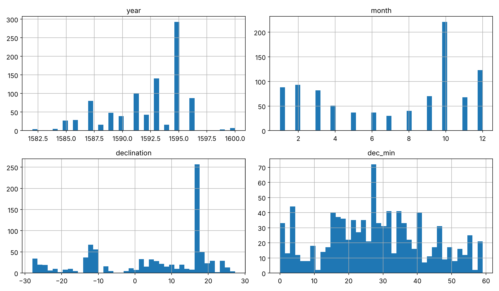
Notice a few things in these histograms:
- The observations are very unevenly spread in time: 1595 alone has about 300. Mars is only visible for a few months around each opposition, roughly every two years.
- The arcminute histogram has spikes at round values (0, 10, 15, 20, 30, 40, 45…). Observers favored round numbers, a well-known effect called heaping. It tells you the real precision is closer to a few arcminutes than to the arcseconds sometimes written down.
- The declination distribution is bimodal. Mars spends long stretches far north or far south of the equator, depending on which part of the zodiac it is crossing during the observing seasons.
Fetching the NASA data
Next, let's write a helper to ask NASA/JPL Horizons for an ephemeris. Horizons has a simple web API: you give it a target ('4' is the Mars barycenter, '10' is the Sun), an observer ('500@399' is the center of the Earth), a time range, and the quantities you want (2 = apparent right ascension and declination, 31 = ecliptic longitude and latitude, 20 = distance). The function caches the answer as a CSV file:
import urllib.parse
NASA_PATH = os.path.join(DATASETS_PATH, "nasa")
HORIZONS_API = "https://ssd.jpl.nasa.gov/api/horizons.api"
def fetch_horizons(target, start, stop, step, quantities, filename,
center="500@399", nasa_path=NASA_PATH):
"""Ask JPL Horizons for an observer table and cache it as CSV.
target: '4' = Mars barycenter, '10' = Sun; center '500@399' = Earth's centre."""
os.makedirs(nasa_path, exist_ok=True)
csv_path = os.path.join(nasa_path, filename)
if os.path.exists(csv_path):
return pd.read_csv(csv_path)
params = dict(format="text", COMMAND=f"'{target}'", OBJ_DATA="NO",
MAKE_EPHEM="YES", EPHEM_TYPE="OBSERVER", CENTER=f"'{center}'",
START_TIME=f"'{start}'", STOP_TIME=f"'{stop}'",
STEP_SIZE=f"'{step}'", QUANTITIES=f"'{quantities}'",
CSV_FORMAT="YES", CAL_FORMAT="JD", ANG_FORMAT="DEG")
url = HORIZONS_API + "?" + urllib.parse.urlencode(params)
text = urllib.request.urlopen(url, timeout=180).read().decode()
header = text[:text.index("$$SOE")].strip().splitlines()[-2]
body = text[text.index("$$SOE") + 5:text.index("$$EOE")].strip()
cols = [c.strip() for c in header.split(",")]
rows = [[x.strip() for x in line.split(",")] for line in body.splitlines()]
df = pd.DataFrame(rows, columns=cols[:len(rows[0])])
df = df.loc[:, [c for c in df.columns if c]] # drop empty columns
df = df.apply(pd.to_numeric, errors="coerce").dropna(axis=1, how="all")
df.to_csv(csv_path, index=False)
return df
# Mars as seen from the centre of the Earth, one row per day, 1582-1600
mars_geo = fetch_horizons("4", "JD 2298900.5", "JD 2305500.5", "1d", "2,31,20",
"horizons_mars_geocentric_1582_1600.csv")
# The Sun as seen from the centre of the Earth, same dates
sun_geo = fetch_horizons("10", "JD 2298900.5", "JD 2305500.5", "1d", "31,20",
"horizons_sun_geocentric_1582_1600.csv")
mars_geo.head()
| Date_________JDUT | R.A._(a-app) | DEC_(a-app) | ObsEcLon | ObsEcLat | delta | deldot | |
|---|---|---|---|---|---|---|---|
| 0 | 2298900.5 | 286.72527 | -23.41019 | 285.314648 | -0.802612 | 2.299836 | -6.509204 |
| 1 | 2298901.5 | 287.55260 | -23.32959 | 286.078399 | -0.811809 | 2.296071 | -6.529239 |
| 2 | 2298902.5 | 288.37952 | -23.24468 | 286.842706 | -0.820956 | 2.292294 | -6.548996 |
| 3 | 2298903.5 | 289.20596 | -23.15548 | 287.607553 | -0.830055 | 2.288506 | -6.568436 |
| 4 | 2298904.5 | 290.03184 | -23.06200 | 288.372921 | -0.839102 | 2.284707 | -6.587491 |
mars_geo.columns = ["jd", "ra", "dec", "ecl_lon", "ecl_lat", "delta", "deldot"]
sun_geo.columns = ["jd", "ecl_lon", "ecl_lat", "delta", "deldot"]
sun_geo.head(3)
| jd | ecl_lon | ecl_lat | delta | deldot | |
|---|---|---|---|---|---|
| 0 | 2298900.5 | 307.839562 | -0.000152 | 0.985585 | 0.278154 |
| 1 | 2298901.5 | 308.854107 | -0.000129 | 0.985747 | 0.285084 |
| 2 | 2298902.5 | 309.868411 | -0.000099 | 0.985914 | 0.291464 |
Finally, let's grab NASA's planetary fact sheet and the Jovian satellite fact sheet. pd.read_html() turns every HTML table on a page into a DataFrame:
def fetch_fact_sheet(url, filename, nasa_path=NASA_PATH):
os.makedirs(nasa_path, exist_ok=True)
html_path = os.path.join(nasa_path, filename)
if not os.path.exists(html_path):
urllib.request.urlretrieve(url, html_path)
return pd.read_html(html_path)
planet_tables = fetch_fact_sheet("https://nssdc.gsfc.nasa.gov/planetary/factsheet/",
"planetary_fact_sheet.html")
jovian_tables = fetch_fact_sheet(
"https://nssdc.gsfc.nasa.gov/planetary/factsheet/joviansatfact.html",
"jovian_satellite_fact_sheet.html")
table = planet_tables[0]
facts = table.iloc[1:].set_index(0) # first column holds the row names
facts.columns = table.iloc[0, 1:].values # first row holds the planet names
facts = facts[facts.index.notna()]
planets = pd.DataFrame({
"a_million_km": pd.to_numeric(facts.loc["Distance from Sun (106 km)"]
.str.replace("*", "", regex=False)),
"period_days": pd.to_numeric(facts.loc["Orbital Period (days)"]
.str.replace("*", "", regex=False)),
"eccentricity": pd.to_numeric(facts.loc["Orbital Eccentricity"]),
}).drop(index="MOON")
planets
| a_million_km | period_days | eccentricity | |
|---|---|---|---|
| MERCURY | 57.9 | 88.0 | 0.206 |
| VENUS | 108.2 | 224.7 | 0.007 |
| EARTH | 149.6 | 365.2 | 0.017 |
| MARS | 228.0 | 687.0 | 0.094 |
| JUPITER | 778.5 | 4331.0 | 0.049 |
| SATURN | 1432.0 | 10747.0 | 0.052 |
| URANUS | 2867.0 | 30589.0 | 0.047 |
| NEPTUNE | 4515.0 | 59800.0 | 0.010 |
| PLUTO | 5906.4 | 90560.0 | 0.244 |
orbits = jovian_tables[1].set_index(0)
galilean = orbits.loc[["Io (I)", "Europa (II)", "Ganymede (III)", "Callisto (IV)"]]
moons = pd.DataFrame({
"a_thousand_km": pd.to_numeric(galilean.iloc[:, 0]),
"period_days": pd.to_numeric(galilean.iloc[:, 2]),
})
moons
| a_thousand_km | period_days | |
|---|---|---|
| 0 | ||
| Io (I) | 421.8 | 1.769138 |
| Europa (II) | 671.1 | 3.551181 |
| Ganymede (III) | 1070.4 | 7.154553 |
| Callisto (IV) | 1882.7 | 16.689017 |
Create a Test Set
It may sound strange to voluntarily set aside part of the data at this stage. After all, you have only taken a quick glance, and surely you should learn a whole lot more before deciding which algorithms to use, right? This is true, but your brain is an amazing pattern detection system, which means it is highly prone to overfitting. If you look at the test set, you may stumble upon a seemingly interesting pattern that leads you to a particular kind of model. When you estimate the generalization error on the test set, your estimate will then be too optimistic. This is called data snooping bias.
First we need a date converter. Astronomers count time in Julian Days (JD), a continuous count of days since noon on 1 January 4713 BC. It makes subtracting dates trivial and avoids any calendar confusion. Here is the classic integer algorithm for a Julian-calendar date:
def julian_calendar_to_jd(year, month, day):
"""Julian Day Number at 0h UT of a date in the *Julian* calendar
(Denmark kept the Julian calendar until 1700)."""
year, month, day = (np.asarray(v, dtype=int) for v in (year, month, day))
a = (14 - month) // 12
y = year + 4800 - a
m = month + 12 * a - 3
return day + (153 * m + 2) // 5 + 365 * y + y // 4 - 32083 - 0.5
julian_calendar_to_jd(1600, 1, 1)
np.float64(2305457.5)
Creating a test set is usually as simple as picking 20% of the rows at random. But not here! Look at the data again: Tycho often measured Mars several times on the same night, sometimes with two different sights of the same instrument ("vno pinna… altero"). Those observations are almost duplicates. If one lands in the training set and its twin in the test set, the test set will look easy, and you will overestimate how well your model generalizes. Let's check:
from sklearn.model_selection import train_test_split
rnd_train, rnd_test = train_test_split(tycho, test_size=0.2, random_state=42)
same_night = rnd_test.apply(lambda r: ((rnd_train["year"] == r["year"]) &
(rnd_train["month"] == r["month"]) &
(rnd_train["day"] == r["day"])).any(), axis=1)
print(f"{same_night.mean():.0%} of the random test rows have a twin from the same night in the training set")
90% of the random test rows have a twin from the same night in the training set
Nine out of ten test rows would have a twin in the training set. Not good. The solution is to split by groups, keeping whole groups together. The natural group is an apparition, the months around one opposition when Mars is observable. This is the astronomical version of the stratified sampling you would use for a census dataset: the split respects the structure of the data instead of ignoring it.
# Mars is only observable for months around each opposition (every ~780 days).
# We label every observation with its "apparition" so that nights of the same
# season always end up in the same set.
SYNODIC_PERIOD = 779.94 # days, mean time between two oppositions
jd_date = julian_calendar_to_jd(tycho["year"], tycho["month"], tycho["day"])
tycho["apparition"] = np.floor((jd_date - jd_date.min() + 200) / SYNODIC_PERIOD).astype(int)
tycho["apparition"].value_counts().sort_index()
apparition 0 5 1 32 2 110 3 83 4 162 5 160 6 378 8 10 Name: count, dtype: int64
Scikit-Learn's GroupShuffleSplit picks whole groups at random:
from sklearn.model_selection import GroupShuffleSplit
splitter = GroupShuffleSplit(n_splits=1, test_size=0.2, random_state=42)
train_idx, test_idx = next(splitter.split(tycho, groups=tycho["apparition"]))
train_set = tycho.iloc[train_idx].copy()
test_set = tycho.iloc[test_idx].copy()
print(len(train_set), "train +", len(test_set), "test")
print("test apparitions:", sorted(test_set["apparition"].unique()))
748 train + 192 test test apparitions: [np.int64(1), np.int64(5)]
Our test set holds two complete apparitions, 1584–1585 and 1593, that the model will never see during training. Predicting a whole unseen observing season is exactly the task the Rudolphine Tables must perform.
Discover and Visualize the Data to Gain Insights
So far you have only taken a quick glance at the data. Now the goal is to go into a little more depth. First, make sure you have put the test set aside and are only exploring the training set:
mars = train_set.copy()
Visualizing Tycho's Observations
Let's plot the declination of Mars against time, with one color per apparition (Figure 1-4):
fig, ax = plt.subplots(figsize=(12, 4.5))
year_frac = mars["year"] + (mars["month"] - 1) / 12 + mars["day"] / 365
sc = ax.scatter(year_frac, mars["declination"], c=mars["apparition"], cmap="tab10",
s=12, alpha=0.8)
ax.set_xlabel("Year (Julian calendar)")
ax.set_ylabel("Declination of Mars (°)")
ax.axhline(0, color="gray", lw=0.6)
ax.grid(alpha=0.3)
plt.colorbar(sc, label="apparition")
save_fig("tycho_declination_vs_time")
plt.show()
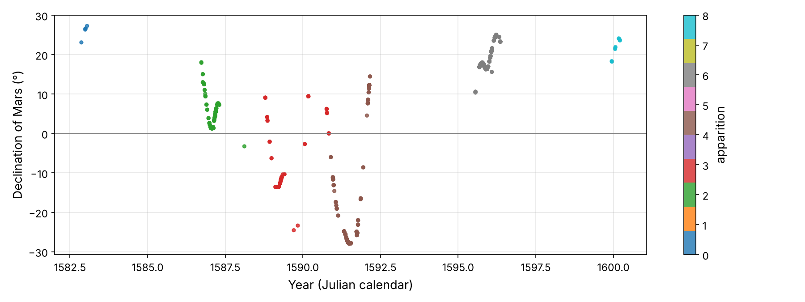
The data come in clumps, one per apparition, with long gaps while Mars is hidden in the Sun's glare. Within each clump the declination changes smoothly. Across clumps it swings between +27° and −28°, as Mars moves north and south of the equator along the tilted ecliptic.
The declination alone hides the most striking feature of planetary motion, so let's borrow NASA's right ascensions for a moment and draw Mars's actual path against the stars (Figure 1-5):
fig, ax = plt.subplots(figsize=(12, 4.8))
for start in (2299500, 2302700):
seg = mars_geo[(mars_geo["jd"] > start) & (mars_geo["jd"] < start + 260)]
ax.plot(seg["ra"], seg["dec"], lw=2)
for k in range(0, len(seg), 30):
ax.plot(seg["ra"].iloc[k], seg["dec"].iloc[k], "ko", ms=3)
ax.invert_xaxis() # east is to the left on a sky map
ax.set_xlabel("Right ascension (°)")
ax.set_ylabel("Declination (°)")
ax.set_title("Mars against the stars over 260 days (dots every 30 days)")
ax.grid(alpha=0.3)
save_fig("retrograde_loops")
plt.show()
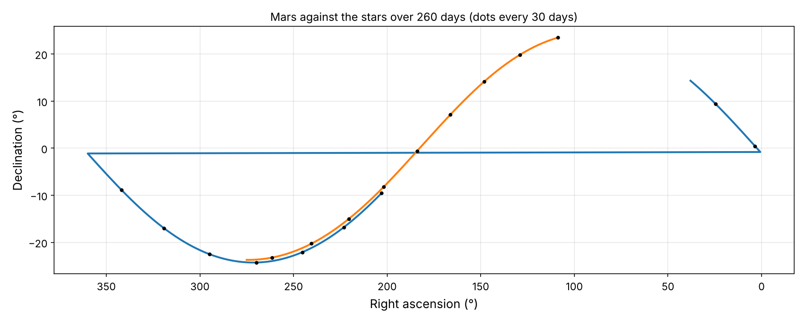
Mars normally moves eastward (to the left on a sky map) through the stars. But for a couple of months around each opposition it stops, goes backward, stops again, and resumes its course, tracing a loop. Ptolemy explained these loops with epicycles, little circles riding on big circles. Copernicus explained them much more simply: they are a perspective effect, the faster Earth overtaking Mars on the inside track. If you've ever passed a slower car on a highway, you've seen it appear to move backward against the distant hills.
Looking for Periodicities
Before trying to model anything, let's ask the data a simple question: which periods does it contain? Our observations are unevenly spaced, so we cannot use a plain Fourier transform. The Lomb–Scargle periodogram fits a sinusoid of every trial period to the data by least squares and reports how much variance it explains. It is the standard tool for unevenly sampled astronomical time series.
from scipy.signal import lombscargle
t_days = (jd_date[train_idx] - jd_date.min()).astype(float)
y_dec = mars["declination"].values - mars["declination"].mean()
periods = np.linspace(200, 1200, 4000)
power = lombscargle(t_days, y_dec, 2 * np.pi / periods, normalize=True)
best_period = periods[np.argmax(power)]
fig, ax = plt.subplots(figsize=(10, 3.8))
ax.plot(periods, power, "b-")
ax.axvline(best_period, color="r", ls="--")
ax.axvline(686.98, color="gray", ls=":")
ax.text(686.98 - 15, power.max() * 0.55, "687 d", color="gray", ha="right")
ax.text(best_period + 15, power.max() * 0.9, f"{best_period:.0f} days", color="r")
ax.set_xlabel("Trial period (days)")
ax.set_ylabel("Lomb-Scargle power")
ax.grid(alpha=0.3)
save_fig("periodogram_plot")
plt.show()
best_period
Saving figure periodogram_plot np.float64(699.1247811952989)
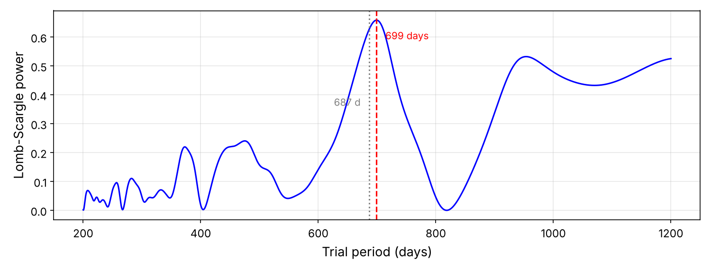
The strongest peak is close to Mars's sidereal period of 687 days (gray dotted line), with no knowledge of astronomy put in. Why the sidereal period rather than the synodic one? Because declination mostly depends on where Mars is along the zodiac (Equation 1-1), and Mars returns to the same zodiac sign every sidereal period. The peak is broadened and shifted a bit because the observations are clumped in a handful of seasons over only eight Martian years. From this period and the length of the year we can recover the synodic period:
# Earth laps Mars: 1/synodic = 1/year - 1/sidereal
year = 365.2564 # sidereal year, known to Tycho to seconds
synodic_from_peak = 1 / (1 / year - 1 / best_period)
synodic_from_copernicus = 1 / (1 / year - 1 / 686.98)
synodic_from_peak, synodic_from_copernicus
(np.float64(764.8517053814926), 779.9360745434901)
The first number uses our rough peak, and the second uses Copernicus's sidereal period. The second value, 780 days, matches the spacing of the clumps in Figure 1-4.
Seeing the Orbit from Above: Kepler's Triangulation
To discover the shape of Mars's orbit we need to see it from above the solar system, which nobody can do. Kepler found a brilliant trick. Mars comes back to exactly the same point of its orbit every 687 days, but the Earth does not: after 687 days the Earth is 43 days short of two full turns. So if you measure the direction of Mars on two dates 687 days apart, you are looking at the same point in space from two different places. Each measurement gives a sight line. The two lines cross at Mars (Figure 1-7).
In vector form: if \(\mathbf{E}_1, \mathbf{E}_2\) are the Earth's positions and \(\mathbf{u}_1, \mathbf{u}_2\) the unit vectors pointing toward Mars (from the observed ecliptic longitudes), we solve
This is just a 2 × 2 linear system for the two unknown distances \(s_1\) and \(s_2\). The Earth's position is minus the Sun's geocentric position, which Horizons gives us. Kepler had to derive it himself from Tycho's solar observations, which took him years.
# Kepler's trick: Mars returns to the same point of its orbit every 687 days,
# while the Earth does not. Two sight lines, 687 days apart, cross at Mars.
lam_mars = np.radians(mars_geo["ecl_lon"].values)
lam_sun = np.radians(sun_geo["ecl_lon"].values)
earth_x = -sun_geo["delta"].values * np.cos(lam_sun) # Earth = minus the Sun's
earth_y = -sun_geo["delta"].values * np.sin(lam_sun) # geocentric position
jd = mars_geo["jd"].values
def triangulate(i, period=686.98):
j = np.searchsorted(jd, jd[i] + period)
u1 = np.array([np.cos(lam_mars[i]), np.sin(lam_mars[i])])
u2 = np.array([np.cos(lam_mars[j]), np.sin(lam_mars[j])])
A = np.column_stack([u1, -u2])
if abs(np.linalg.det(A)) < 0.2: # sight lines almost parallel
return None
b = np.array([earth_x[j] - earth_x[i], earth_y[j] - earth_y[i]])
s1, s2 = np.linalg.solve(A, b) # distances Earth->Mars (AU)
return jd[i], earth_x[i] + s1 * u1[0], earth_y[i] + s1 * u1[1]
points = [triangulate(i) for i in range(0, len(jd) - 700, 5)]
orbit = pd.DataFrame([p for p in points if p is not None], columns=["jd", "x", "y"])
orbit["r"] = np.hypot(orbit["x"], orbit["y"])
orbit["theta"] = np.degrees(np.arctan2(orbit["y"], orbit["x"])) % 360
orbit.describe().loc[["count", "min", "max"]]
| jd | x | y | r | theta | |
|---|---|---|---|---|---|
| count | 894.0 | 894.000000 | 894.000000 | 894.000000 | 894.000000 |
| min | 2298900.5 | -1.646304 | -1.449170 | 1.380493 | 0.209396 |
| max | 2304800.5 | 1.404391 | 1.596116 | 1.668593 | 359.975143 |
fig, ax = plt.subplots(figsize=(7.5, 7.5))
i = 400
j = np.searchsorted(jd, jd[i] + 686.98)
ax.plot(earth_x[:366], earth_y[:366], color="tab:blue", lw=1, label="Earth's orbit")
ax.scatter(orbit["x"], orbit["y"], s=8, c="tab:red", label="triangulated Mars")
for k, col in ((i, "tab:green"), (j, "tab:purple")):
ax.plot(earth_x[k], earth_y[k], "o", color=col, ms=8)
ax.plot([earth_x[k], earth_x[k] + 3 * np.cos(lam_mars[k])],
[earth_y[k], earth_y[k] + 3 * np.sin(lam_mars[k])], color=col, lw=1.2,
ls="--", label=f"sight line on JD {jd[k]:.0f}")
ax.plot(0, 0, "*", color="orange", ms=18, label="Sun")
ax.set_xlim(-2, 2); ax.set_ylim(-2, 2); ax.set_aspect("equal")
ax.set_xlabel("x (AU)"); ax.set_ylabel("y (AU)")
ax.legend(loc="lower left", fontsize=9)
ax.grid(alpha=0.3)
save_fig("kepler_triangulation_plot")
plt.show()
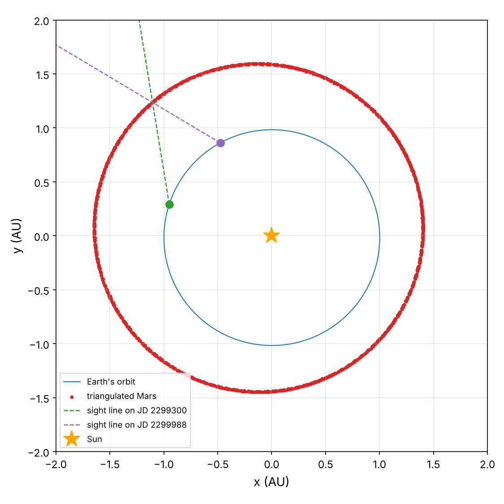
We just measured the orbit of another planet, from the Earth, with a ruler and some trigonometry! Look at the r column above. The distance between Mars and the Sun varies from 1.38 to 1.67 astronomical units (AU, the Earth–Sun distance), so the orbit is not a circle centered on the Sun.
Looking for Correlations
What curve are these points on? A circle centered somewhere else? An oval, as Kepler first thought? Let's ask a linear model. Every conic section (ellipse, parabola, hyperbola, and the circle as a special ellipse) satisfies an equation of the form
This equation is linear in the five coefficients. If we build the features \(x^2, xy, y^2, x, y\) for each point and regress them onto a target of all ones, a plain LinearRegression finds the best conic! The sign of the discriminant \(B^2 - 4AC\) then tells us which kind of conic it is. Negative means an ellipse.
from sklearn.linear_model import LinearRegression
# A conic is A x² + B xy + C y² + D x + E y = 1 -> linear in the 5 coefficients!
X_conic = np.c_[orbit.x**2, orbit.x * orbit.y, orbit.y**2, orbit.x, orbit.y]
conic_reg = LinearRegression(fit_intercept=False)
conic_reg.fit(X_conic, np.ones(len(orbit)))
A, B, C, D, E = conic_reg.coef_
def conic_geometry(A, B, C, D, E):
Q = np.array([[A, B / 2], [B / 2, C]])
center = np.linalg.solve(2 * Q, -np.array([D, E]))
F = 1 + center @ Q @ center
eigval, eigvec = np.linalg.eigh(Q)
semi_axes = np.sqrt(F / eigval)
a, b = semi_axes.max(), semi_axes.min()
return center, a, b, np.sqrt(1 - (b / a) ** 2), B**2 - 4 * A * C
center, a_fit, b_fit, e_fit, discriminant = conic_geometry(A, B, C, D, E)
print(f"discriminant B²-4AC = {discriminant:.3f} (negative => ellipse)")
print(f"a = {a_fit:.4f} AU, b = {b_fit:.4f} AU, e = {e_fit:.4f}")
print(f"centre is {np.hypot(*center):.4f} AU from the Sun; a*e = {a_fit * e_fit:.4f} AU")
discriminant B²-4AC = -0.759 (negative => ellipse) a = 1.5248 AU, b = 1.5187 AU, e = 0.0898 centre is 0.1416 AU from the Sun; a*e = 0.1369 AU
The discriminant is negative: the orbit is an ellipse. Its semi-major axis is \(a\) = 1.525 AU and its eccentricity \(e\) ≈ 0.09. And look at the last line: the center of the ellipse is 0.14 AU from the Sun, which is (within the noise) exactly \(a\,e\). For an ellipse, the distance from the center to each focus is precisely \(a e\). The Sun sits at a focus of the ellipse. That is Kepler's first law, extracted from data with a linear regression (Figure 1-8).
fig, ax = plt.subplots(figsize=(7, 7))
gx, gy = np.meshgrid(np.linspace(-1.9, 1.9, 400), np.linspace(-1.9, 1.9, 400))
ax.contour(gx, gy, A*gx**2 + B*gx*gy + C*gy**2 + D*gx + E*gy, levels=[1], colors="k")
circle = plt.Circle((0, 0), orbit["r"].mean(), fill=False, ls=":", color="gray",
label="best circle around the Sun")
ax.add_patch(circle)
ax.scatter(orbit.x, orbit.y, s=6, c="tab:red", label="triangulated points")
ax.plot(0, 0, "*", color="orange", ms=16, label="Sun (a focus)")
ax.plot(*center, "k+", ms=12, label="centre of the ellipse")
focus2 = 2 * center
ax.plot(*focus2, "kx", ms=9, label="empty focus")
ax.set_aspect("equal"); ax.grid(alpha=0.3)
ax.set_xlabel("x (AU)"); ax.set_ylabel("y (AU)")
ax.legend(loc="lower left", fontsize=9)
save_fig("fitted_ellipse_plot")
plt.show()
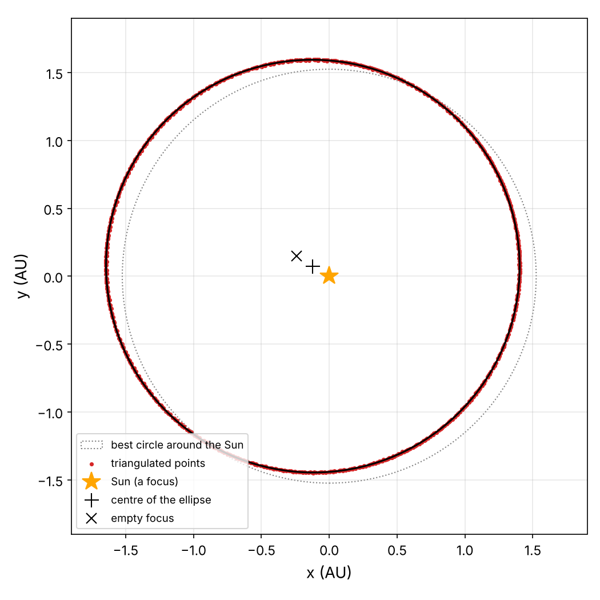
Now that we have positions, let's look for correlations between them. How does the angular speed of Mars around the Sun, \(d\theta/dt\), relate to its distance \(r\)? The corr() method computes the standard correlation coefficient (Pearson's r):
orbit = orbit.sort_values("jd").reset_index(drop=True)
gaps = np.diff(orbit["jd"].values)
theta_unwrapped = np.unwrap(np.radians(orbit["theta"].values))
orbit["theta_dot"] = np.gradient(theta_unwrapped, orbit["jd"].values) # rad/day
orbit.loc[np.r_[gaps, 99] > 6, "theta_dot"] = np.nan # skip gaps
orbit[["r", "theta_dot"]].corr()
| r | theta_dot | |
|---|---|---|
| r | 1.000000 | -0.997437 |
| theta_dot | -0.997437 | 1.000000 |
A correlation of −0.997 is about as strong as data ever gets: Mars moves faster when it is closer to the Sun. But the correlation coefficient only measures linear relationships. To find the actual law, plot it, and also plot the logarithms. A power law \(y \propto x^k\) becomes a straight line of slope \(k\) in log–log space (Figure 1-9):
fig, axes = plt.subplots(1, 2, figsize=(12, 4.3))
axes[0].scatter(orbit["r"], np.degrees(orbit["theta_dot"]), s=8)
axes[0].set_xlabel("distance from the Sun r (AU)")
axes[0].set_ylabel("angular speed (°/day)")
axes[0].grid(alpha=0.3)
axes[1].scatter(np.log(orbit["r"]), np.log(orbit["theta_dot"]), s=8)
slope = np.polyfit(np.log(orbit["r"]).values[orbit.theta_dot.notna()],
np.log(orbit["theta_dot"]).values[orbit.theta_dot.notna()], 1)[0]
axes[1].set_title(f"slope = {slope:.3f}")
axes[1].set_xlabel("log r"); axes[1].set_ylabel("log angular speed")
axes[1].grid(alpha=0.3)
save_fig("angular_speed_vs_distance")
plt.show()
slope
Saving figure angular_speed_vs_distance np.float64(-1.9968802863962498)
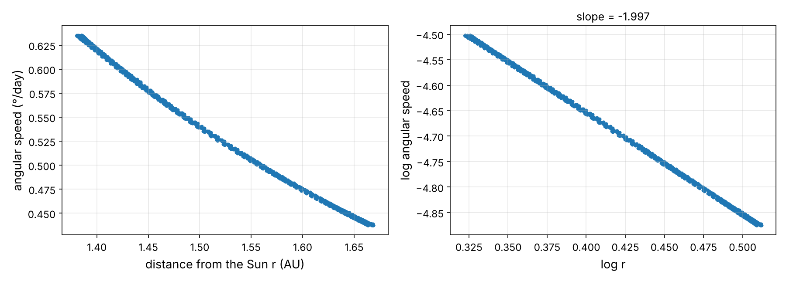
The slope is −2.00: the angular speed is inversely proportional to the square of the distance, \(\dot\theta \propto 1/r^2\).
Experimenting with Attribute Combinations
One last thing you may want to do before preparing the data is to try out various attribute combinations. If \(\dot\theta \propto 1/r^2\), then the combination \(\tfrac{1}{2}r^2\dot\theta\) should be constant. That combination has a geometric meaning. In a short time \(dt\) the Sun–Mars line sweeps a thin triangle of area \(\tfrac{1}{2} r \cdot r\,d\theta\), so \(\tfrac{1}{2}r^2\dot\theta\) is the area swept per day:
orbit["areal_velocity"] = 0.5 * orbit["r"] ** 2 * orbit["theta_dot"] # AU² per day
orbit[["theta_dot", "areal_velocity"]].describe().loc[["mean", "std", "min", "max"]]
| theta_dot | areal_velocity | |
|---|---|---|
| mean | 0.009249 | 0.010602 |
| std | 0.001229 | 0.000027 |
| min | 0.007633 | 0.010552 |
| max | 0.011087 | 0.010655 |
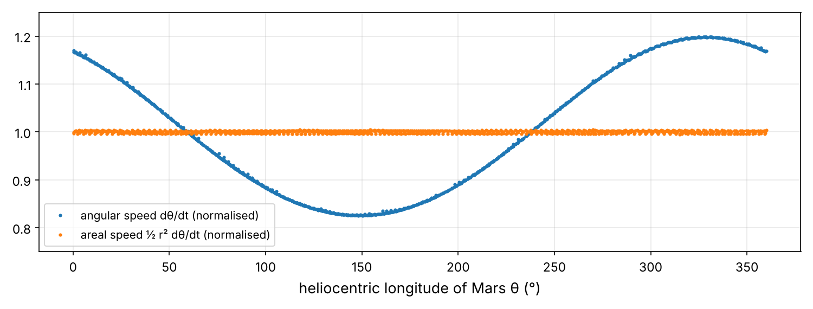
fig, ax = plt.subplots(figsize=(10, 3.8))
ax.plot(orbit["theta"], orbit["theta_dot"] / orbit["theta_dot"].mean(), ".",
ms=4, label="angular speed dθ/dt (normalised)")
ax.plot(orbit["theta"], orbit["areal_velocity"] / orbit["areal_velocity"].mean(), ".",
ms=4, label="areal speed ½ r² dθ/dt (normalised)")
ax.set_xlabel("heliocentric longitude of Mars θ (°)")
ax.set_ylim(0.75, 1.25); ax.grid(alpha=0.3); ax.legend()
save_fig("areal_velocity_plot")
plt.show()
The angular speed varies by ±19% around the orbit, but the areal speed varies by about 0.3%, and most of that is measurement and differentiation noise. The line from the Sun to Mars sweeps out equal areas in equal times. That is Kepler's second law, found by combining two attributes, just like a "rooms per household" ratio can be more informative than either count alone.3
Finally, let's try one more combination, this time across planets, using NASA's fact sheet. First, convert to astronomical units and years:
AU_KM = 149.6e6
harmony = planets.copy()
harmony["a_AU"] = harmony["a_million_km"] * 1e6 / AU_KM
harmony["period_years"] = harmony["period_days"] / 365.25
harmony[["a_AU", "period_years"]]
| a_AU | period_years | |
|---|---|---|
| MERCURY | 0.387032 | 0.240931 |
| VENUS | 0.723262 | 0.615195 |
| EARTH | 1.000000 | 0.999863 |
| MARS | 1.524064 | 1.880903 |
| JUPITER | 5.203877 | 11.857632 |
| SATURN | 9.572193 | 29.423682 |
| URANUS | 19.164439 | 83.748118 |
| NEPTUNE | 30.180481 | 163.723477 |
| PLUTO | 39.481283 | 247.939767 |
fig, axes = plt.subplots(1, 2, figsize=(12, 4.5))
axes[0].plot(harmony["a_AU"], harmony["period_years"], "o")
for name, row in harmony.iterrows():
axes[0].annotate(name.title(), (row.a_AU, row.period_years), fontsize=8,
xytext=(4, -10), textcoords="offset points")
axes[0].set_xlabel("semi-major axis a (AU)"); axes[0].set_ylabel("period T (years)")
axes[1].loglog(harmony["a_AU"], harmony["period_years"], "o")
axes[1].set_xlabel("a (AU, log scale)"); axes[1].set_ylabel("T (years, log scale)")
for ax in axes: ax.grid(alpha=0.3, which="both")
save_fig("period_vs_distance_plot")
plt.show()
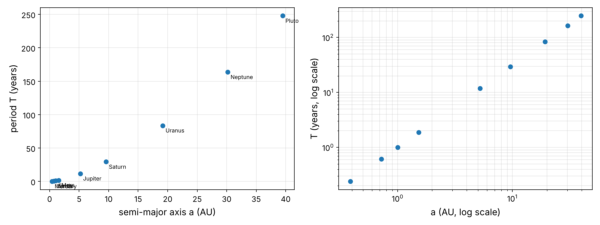
In linear scale the points curve upward: farther planets are slower in a more-than-proportional way. In log–log scale they fall on a perfectly straight line, so it's a power law again. Let's try a few combinations:
harmony["T2_over_a3"] = harmony["period_years"] ** 2 / harmony["a_AU"] ** 3
harmony["T_over_a"] = harmony["period_years"] / harmony["a_AU"]
harmony[["T_over_a", "T2_over_a3"]].round(3)
| T_over_a | T2_over_a3 | |
|---|---|---|
| MERCURY | 0.623 | 1.001 |
| VENUS | 0.851 | 1.000 |
| EARTH | 1.000 | 1.000 |
| MARS | 1.234 | 0.999 |
| JUPITER | 2.279 | 0.998 |
| SATURN | 3.074 | 0.987 |
| URANUS | 4.370 | 0.996 |
| NEPTUNE | 5.425 | 0.975 |
| PLUTO | 6.280 | 0.999 |
\(T/a\) keeps growing, but \(T^2/a^3\) is essentially 1 for every planet from Mercury to Pluto. The square of the period is proportional to the cube of the distance. That is Kepler's third law, which took him ten more years after the first two. We will turn it into a proper regression model later.
We found Laws 1 and 2 on NASA's triangulated positions, which are the output of a model of the solar system. Is that circular reasoning? Not quite: the triangulation only uses directions, which are what NASA's model is fitted to (real observations), and our ellipse came out of a generic conic fit. But the honest test is to check that the laws also explain Tycho's raw data better than the alternatives. That is what the rest of this chapter does.
Prepare the Data for Machine Learning Algorithms
It's time to prepare the data for our models. Instead of doing this manually, you should write functions for this purpose. They let you reproduce the transformations on any dataset (for example, the test set), and you will gradually build a library of reusable functions. Let's revert to a clean training set and separate the predictors from the labels:
mars = train_set.drop("declination", axis=1)
mars_labels = train_set["declination"].copy()
Data Cleaning
Our model needs a single number for each observation: the time, in UT, as a Julian Date. Tycho gives us a date in the Julian calendar and an hour written in Latin abbreviations. Let's look at some of them:
mars["time_text"].isna().sum(), mars["time_text"].dropna().sample(8, random_state=4).tolist()
(np.int64(30), ['H.8 M.35 1/6', 'H.10 M.26', 'H.6 M.51', 'H.8 M.15 2/3', 'H.6 M.52 1/3', 'H. 5 M.15', 'H.5 M.52 1/2', 'H.12 M.49 5/6'])
"H.8 M.35 1/6" means 8 hours, 35 and 1/6 minutes. Some entries have seconds ("S.50"), some write fractions of an hour ("H.9 1/2"), and some are just two bare numbers ("5 55"). A few regular expressions handle all of these formats:
import re
def latin_number(text):
"""'8 3/4' -> 8.75"""
total = 0.0
for token in text.split():
if "/" in token:
num, den = token.split("/")
total += float(num) / float(den)
else:
total += float(token)
return total
def parse_tycho_time(text):
"""Turn Tycho's 'H.7 M.42 1/2', 'H.9 1/2 P.M.' or '5 55' into hours (float)."""
if not isinstance(text, str):
return np.nan
text = text.replace(",", " ")
bare = re.match(r"^\s*(\d+)\s+(\d+)\s*$", text) # '5 55' = 5h55m
if bare:
return int(bare.group(1)) + int(bare.group(2)) / 60
hour = re.search(r"H\.?\s*(\d+(?:\s+\d/\d)?)", text)
if hour is None:
return np.nan
hours = latin_number(hour.group(1))
minute = re.search(r"M\.?\s*(\d+(?:\s+\d/\d)?)", text)
if minute and "P.M" not in text[minute.start() - 1:minute.start() + 3]:
hours += latin_number(minute.group(1)) / 60
second = re.search(r"S\.?\s*(\d+)", text)
if second:
hours += float(second.group(1)) / 3600
return hours
[parse_tycho_time(s) for s in ["H.8 3/4", "H.1 M.50", "H.7 M.2 S.50", "H.9 1/2 P.M.", "5 55"]]
[8.75, 1.8333333333333335, 7.0472222222222225, 9.5, 5.916666666666667]
Now, is 8:45 in the morning or the evening? Tycho followed the astronomer's convention, in which the day starts at noon. "H.9" means 9 hours after noon, and "H.15" means 3 o'clock the next morning. When he observed before dawn he usually wrote MANE ("in the morning") or A. M. in the heading, and in the evening VESPERI or P. M.. But often he wrote it only once per night. The following function reads those markers and shares them among all the rows of the same night:
def morning_or_evening(X):
"""+1 = morning (MANE, A.M.), -1 = evening (VESPERI, P.M.), 0 = not said.
Tycho often wrote the word once per night, so a night's rows share it."""
text = (X["day_text"].fillna("") + " " + X["time_text"].fillna(""))
text = text.str.upper().str.replace(" ", "", regex=False)
flag = pd.Series(np.where(text.str.contains(r"MANE|A\.M"), 1,
np.where(text.str.contains(r"VESPERI|P\.M"), -1, 0)), index=X.index)
night = X["year"] * 10000 + X["month"] * 100 + X["day"]
night_flag = flag.groupby(night).transform(
lambda f: 1 if (f == 1).sum() > (f == -1).sum() else (-1 if (f == -1).any() else 0))
return np.where(flag != 0, flag, night_flag)
pd.Series(morning_or_evening(tycho)).value_counts()
0 382 -1 342 1 216 Name: count, dtype: int64
We now have three ways to deal with the 30 observations whose hour is missing in the training set (the same three options you have for any missing value): drop them, drop the attribute, or impute a value. Mars moves at most about 0.4° a day in declination, so a wrong guess of a few hours costs at most a few arcminutes. We will impute a typical observing time instead of losing the data: 9 p.m. for evening observations and 5 a.m. for morning ones.
Remember our calendar assumption? It is wrong for part of the data. In 1599 Tycho moved to Benátky castle in Bohemia, and Bohemia had adopted the new Gregorian calendar in 1584. Denmark had not. The same calendar date therefore means two different days, ten days apart, before and after the move. If you ignore this, the 1599–1600 observations come out about 70′ off, and nothing in the model can fix it. Always check how the data was produced.
def gregorian_calendar_to_jd(year, month, day):
"""Julian Day Number at 0h UT of a date in the Gregorian calendar."""
year, month, day = (np.asarray(v, dtype=int) for v in (year, month, day))
a = (14 - month) // 12
y = year + 4800 - a
m = month + 12 * a - 3
return day + (153 * m + 2) // 5 + 365 * y + y // 4 - y // 100 + y // 400 - 32045 - 0.5
# 10 days apart in 1600: same calendar date, two different days!
gregorian_calendar_to_jd(1600, 1, 20) - julian_calendar_to_jd(1600, 1, 20)
np.float64(-10.0)
Custom Transformers
Although Scikit-Learn provides many useful transformers, you will need to write your own for tasks such as custom cleanup operations. You will want your transformer to work seamlessly with Scikit-Learn functionalities such as pipelines. Scikit-Learn relies on duck typing, so all you need is a class that implements fit() (returning self) and transform(). Adding TransformerMixin as a base class gives you fit_transform() for free. Adding BaseEstimator gives you get_params() and set_params(), which hyperparameter tuning needs. Here is a transformer that turns the raw Tycho columns into Julian Dates in UT:
from sklearn.base import BaseEstimator, TransformerMixin
URANIBORG_LONGITUDE = 12.70 # degrees east of Greenwich (Benátky, 14.8°E, is close)
class TychoTimeConverter(BaseEstimator, TransformerMixin):
"""Raw Tycho columns -> one feature: the Julian Date (UT) of the observation."""
def __init__(self, evening_default=9.0, morning_default=5.0,
gregorian_from=(1599, 12), longitude=URANIBORG_LONGITUDE):
self.evening_default = evening_default # hours after noon
self.morning_default = morning_default # hours after midnight
self.gregorian_from = gregorian_from # Tycho moved to Bohemia
self.longitude = longitude
def fit(self, X, y=None):
return self # nothing to learn
def __sklearn_is_fitted__(self):
return True # stateless: always ready to transform
def transform(self, X):
year, month, day = X["year"], X["month"], X["day"]
gy, gm = self.gregorian_from
gregorian = ((year > gy) | ((year == gy) & (month >= gm))).values
jd0 = np.where(gregorian, gregorian_calendar_to_jd(year, month, day),
julian_calendar_to_jd(year, month, day))
hours = X["time_text"].map(parse_tycho_time).values
morning = morning_or_evening(X) == 1
# mornings are counted from midnight; everything else from noon
# (the astronomer's day began at noon: 'H.15' is 3 a.m. the next morning)
hours = np.where(morning,
np.where(np.isnan(hours), self.morning_default, hours),
12 + np.where(np.isnan(hours), self.evening_default, hours))
local_jd = jd0 + hours / 24
ut_jd = local_jd - self.longitude / 360 # local time -> UT
return ut_jd.reshape(-1, 1)
time_converter = TychoTimeConverter()
mars_jd = time_converter.transform(mars)
mars_jd[:5]
array([[2299198.67305556],
[2299247.33972222],
[2299247.33972222],
[2299244.33972222],
[2299266.33972222]])
The defaults for imputation, the date of the calendar switch, and the observatory's longitude are hyperparameters. If you are unsure about any of them, you can tune them later like any other hyperparameter. The small __sklearn_is_fitted__() method tells recent versions of Scikit-Learn that this transformer is stateless: it has nothing to learn and is always ready to transform.
Feature Scaling
One of the most important transformations you need to apply to your data is feature scaling. Machine Learning algorithms don't perform well when the numbers they handle have very different scales, and the optimizer we'll use is no exception. Julian Dates are huge numbers (about 2.3 million), while our model cares about differences of hours. We'll simply count days from a reference epoch, 1 January 1590, near the middle of the data:
T0 = julian_calendar_to_jd(1590, 1, 1) # reference epoch for the orbital elements
class EpochCentering(BaseEstimator, TransformerMixin):
"""Julian Date -> days since epoch T0 (keeps numbers small and well scaled)."""
def __init__(self, epoch=T0):
self.epoch = epoch
def fit(self, X, y=None):
return self
def __sklearn_is_fitted__(self):
return True
def transform(self, X):
return np.asarray(X, dtype=float) - self.epoch
Scaling matters for the parameters too. Our model mixes eccentricities (about 0.1), angles (hundreds of degrees) and periods (hundreds of days, which need to be right to 0.01 day). In early versions of this project the optimizer happily wandered off to absurd periods, because a tiny step in a period changes the predictions enormously. Passing x_scale="jac" to SciPy's least_squares() rescales each parameter by the sensitivity of the residuals to it, which fixed the problem.
Transformation Pipelines
Scikit-Learn's Pipeline class chains transformations in the right order. Each step but the last must be a transformer. When you call the pipeline's fit_transform(), it calls each step in turn and passes its output to the next:
from sklearn.pipeline import Pipeline
prep_pipeline = Pipeline([
("time", TychoTimeConverter()),
("center", EpochCentering()),
])
mars_prepared = prep_pipeline.fit_transform(mars)
mars_prepared[:5].ravel(), mars_prepared.shape
(array([-2606.82694444, -2558.16027778, -2558.16027778, -2561.16027778,
-2539.16027778]),
(748, 1))
The output is one feature per observation: days since 1 January 1590, in UT. The first row, Tycho's observation of the morning of 12 November 1582, is 2,607 days before the epoch.
Select and Train a Model
At last! You framed the problem, got the data and explored it, sampled a training set and a test set, and wrote a transformation pipeline. You are now ready to select and train models. In most projects, "selecting a model" means trying a few families such as linear models, trees or neural networks. Here, the families are world systems.
Four Candidate Models of the Sky
Every candidate model describes the orbits of the Earth and of Mars around the Sun. Each orbit has the same ingredients: a size (\(a\); the Earth's is 1 AU by definition), a shape (\(e\)), the direction of its perihelion (\(\varpi\)), where the planet was at the epoch (its mean longitude \(L_0\)), and a period \(P\). Mars's orbit also has a small tilt \(i\) relative to the Earth's orbit, around a line called the line of nodes, at longitude \(\Omega\). The models differ only in how the planet moves on its orbit. To describe that, astronomers use the mean anomaly, an angle that grows at a constant rate:
Here are the four hypotheses, in historical order (Figure 1-12):
- Concentric circle (Copernicus, simplified). The planet moves at constant speed on a circle centered on the Sun. Position = \(a(\cos M, \sin M)\).
- Equant (Ptolemy; Kepler's "vicarious hypothesis" of 1601). The orbit is a circle whose center is offset from the Sun by \(e\,a\). The planet moves so that its angle grows uniformly as seen from a third point, the equant, offset by \(e_q\,a\). Ptolemy put the equant at twice the center's offset. Kepler let both offsets be free parameters, and so do we.
- Eccentric circle with equal areas (Kepler, 1602). The same off-center circle, but the planet moves so that the Sun-planet line sweeps equal areas in equal times. Kepler tried this after he had found the area law, and it missed by up to 8′.
- Ellipse with equal areas (Kepler, 1605). The orbit is an ellipse with the Sun at a focus, and the planet sweeps equal areas in equal times.
How do you make a planet "sweep equal areas"? This is where a beautiful piece of geometry comes in. Draw the auxiliary circle of radius \(a\) around the ellipse's center, and describe the planet's position by the angle \(E\) of the corresponding point on that circle (the eccentric anomaly, Figure 1-12, left). For a circle of radius \(a\) whose center is at distance \(a e\) from the Sun, the area swept from perihelion is the area of a circular sector minus a triangle:
Equal areas in equal times means that this area grows in proportion to time, and so in proportion to \(M\). This gives the most famous equation of celestial mechanics:
Squashing the circle vertically by \(b/a\) into an ellipse multiplies every area by the same factor, so Kepler's equation holds for the ellipse too. The only difference between models 3 and 4 is this squash:
Kepler's equation has no closed-form solution for \(E\), but Newton's method converges in a few steps: \(E_{k+1} = E_k - (E_k - e\sin E_k - M)/(1 - e\cos E_k)\). Here is the code for all four models, the conversion to 3D, and the computation of the declination we observe from the Earth (Equation 1-1 again, with precession added to the longitude):
D2R = np.pi / 180
PRECESSION = 50.29 / 3600 * D2R / 365.25 # radians per day (equinox drifts westward)
def solve_kepler(M, e, n_iter=12):
"""Solve Kepler's equation E - e sin E = M by Newton's method."""
E = M + e * np.sin(M)
for _ in range(n_iter):
E = E - (E - e * np.sin(E) - M) / (1 - e * np.cos(E))
return E
def position_in_orbit(model, a, e, e_equant, M):
"""(x, y) in the orbital plane, Sun at the origin, x-axis toward perihelion.
M is the 'mean anomaly': an angle that grows uniformly with time."""
if model == "circle": # Copernicus, simplified
return a * np.cos(M), a * np.sin(M)
if model == "equant": # Ptolemy / Kepler's vicarious hypothesis
d = np.vstack([np.cos(M), np.sin(M)]) # direction seen from equant
equant = np.array([[-e_equant * a], [0.0]])
w = np.array([[-(e_equant - e) * a], [0.0]]) # equant - circle centre
wd = (w * d).sum(axis=0)
s = -wd + np.sqrt(np.maximum(wd**2 - (w**2).sum() + a * a, 0)) # ray hits the circle
p = equant + s * d
return p[0], p[1]
E = solve_kepler(M, e) # the two models that sweep equal areas
if model == "circle_area":
return a * (np.cos(E) - e), a * np.sin(E)
if model == "ellipse":
return a * (np.cos(E) - e), a * np.sqrt(1 - e * e) * np.sin(E)
raise ValueError(model)
def heliocentric(model, t, a, e, e_equant, varpi, L0, period, inc=0.0, node=0.0):
"""3D heliocentric ecliptic coordinates of a planet at times t (days since T0)."""
M = (L0 + 360.0 * t / period - varpi) * D2R # mean anomaly
x, y = position_in_orbit(model, a, e, e_equant, M)
u = (varpi - node) * D2R # rotate: perihelion -> node frame
xn, yn = np.cos(u) * x - np.sin(u) * y, np.sin(u) * x + np.cos(u) * y
cO, sO, ci, si = np.cos(node*D2R), np.sin(node*D2R), np.cos(inc*D2R), np.sin(inc*D2R)
return cO * xn - sO * ci * yn, sO * xn + cO * ci * yn, si * yn
def declination_of_mars(model, t, p):
"""Predicted declination (degrees) of Mars seen from the Earth at times t."""
ex, ey, ez = heliocentric(model, t, 1.0, p["e_E"], p["eq_E"], p["varpi_E"],
p["L_E"], p["P_E"])
mx, my, mz = heliocentric(model, t, p["a_M"], p["e_M"], p["eq_M"], p["varpi_M"],
p["L_M"], p["P_M"], p["i_M"], p["node_M"])
gx, gy, gz = mx - ex, my - ey, mz - ez # Earth -> Mars
lam = np.arctan2(gy, gx) + PRECESSION * t # ecliptic longitude of date
beta = np.arctan2(gz, np.hypot(gx, gy)) # ecliptic latitude
eps = p["obliquity"] * D2R
return np.arcsin(np.sin(beta) * np.cos(eps) +
np.cos(beta) * np.sin(eps) * np.sin(lam)) / D2R
Now let's wrap this in a Scikit-Learn estimator, so that we can use cross-validation and grid search on it. Like our transformers, it inherits from BaseEstimator, which makes the constructor arguments hyperparameters, and from RegressorMixin. fit() calls SciPy's least_squares(), which minimizes the sum of a (possibly robust) loss of the residuals in arcminutes. Since the error surface has many local minima (an orbit can be fitted "backwards" or with swapped angles), it can restart from several random points and keep the best:
from scipy.optimize import least_squares
from sklearn.base import RegressorMixin
PARAMS = ["e_E", "varpi_E", "L_E", "P_E", "a_M", "e_M", "varpi_M", "L_M", "P_M",
"i_M", "node_M", "obliquity", "eq_E", "eq_M"]
LOWER = [0, -720, -720, 360, 1.2, 0, -720, -720, 680, 0, -720, 22.5, 0, 0]
UPPER = [.1, 720, 720, 370, 1.9, .3, 720, 720, 695, 6, 720, 24.5, .2, .5]
class OrbitRegressor(BaseEstimator, RegressorMixin):
"""Fits the orbits of the Earth and Mars to observed declinations of Mars.
model: 'circle' | 'equant' | 'circle_area' | 'ellipse'
loss, f_scale: robust loss passed to scipy's least_squares (residuals in arcmin)
init: dict of starting parameters (or None for random restarts)
"""
def __init__(self, model="ellipse", loss="soft_l1", f_scale=3.0, init=None,
n_starts=1, fix_year=True, random_state=42):
self.model = model
self.loss = loss
self.f_scale = f_scale
self.init = init
self.n_starts = n_starts
self.fix_year = fix_year
self.random_state = random_state
def _unpack(self, q):
p = dict(zip(PARAMS, q))
if self.model == "circle":
p["e_E"] = p["e_M"] = 0.0
return p
def _starting_points(self):
rng = np.random.RandomState(self.random_state)
for k in range(self.n_starts):
if self.init is not None and k == 0:
q = np.array([self.init[name] for name in PARAMS], dtype=float)
else:
q = np.array([0.0, 0.0, rng.uniform(0, 360), 365.2564, 1.52, 0.0, 0.0,
rng.uniform(0, 360), 686.98, 1.85, rng.uniform(0, 360),
23.5, 0.0, 0.0])
yield np.clip(q, LOWER, UPPER)
def fit(self, X, y):
t = np.asarray(X, dtype=float).ravel()
y = np.asarray(y, dtype=float)
free = np.ones(len(PARAMS), dtype=bool)
if self.fix_year:
free[PARAMS.index("P_E")] = False # the year is known to seconds
lo, hi = np.array(LOWER)[free], np.array(UPPER)[free]
best = None
for q0 in self._starting_points():
def residuals(z):
q = q0.copy(); q[free] = z
return (y - declination_of_mars(self.model, t, self._unpack(q))) * 60
res = least_squares(residuals, q0[free], bounds=(lo, hi), loss=self.loss,
f_scale=self.f_scale, x_scale="jac", max_nfev=600)
if best is None or res.cost < best[0].cost:
q = q0.copy(); q[free] = res.x
best = (res, q)
self.result_, q = best
self.params_ = self._unpack(q)
return self
def predict(self, X):
t = np.asarray(X, dtype=float).ravel()
return declination_of_mars(self.model, t, self.params_)
We fix the length of the year (fix_year=True). Tycho knew it to within a few seconds from decades of solar observations, and with only 18 years of Mars data the fit cannot pin it down as well. Using solid prior knowledge like this is a perfectly legitimate form of feature engineering. Everything else, including the obliquity of the ecliptic, is learned from the data.
Training and Evaluating on the Training Set
Let's first train the simplest model, the concentric circle, with 15 random restarts:
circle_reg = OrbitRegressor(model="circle", n_starts=15)
circle_reg.fit(mars_prepared, mars_labels)
OrbitRegressor(model='circle', n_starts=15)In a Jupyter environment, please rerun this cell to show the HTML representation or trust the notebook.
On GitHub, the HTML representation is unable to render, please try loading this page with nbviewer.org.
Parameters
| model | 'circle' | |
| n_starts | 15 | |
| loss | 'soft_l1' | |
| f_scale | 3.0 | |
| init | None | |
| fix_year | True | |
| random_state | 42 |
Done! You now have a working model of the solar system. Let's try it on a few instances from the training set:
some_data = mars.iloc[:5]
some_labels = mars_labels.iloc[:5]
some_data_prepared = prep_pipeline.transform(some_data)
print("Predictions:", circle_reg.predict(some_data_prepared).round(2))
print("Labels: ", some_labels.values.round(2))
Predictions: [26.01 24.47 24.47 24.49 24.81] Labels: [23.12 26.6 26.62 26.37 27.3 ]
It works, although the predictions are off by a few degrees, which is about the quality of the tables in use in 1600. Let's measure the errors on the whole training set:
from sklearn.metrics import mean_squared_error, median_absolute_error
def arcmin_errors(reg, X, y):
err = (reg.predict(X) - np.asarray(y)) * 60
return {"RMSE'": np.sqrt(mean_squared_error(y * 60, reg.predict(X) * 60)),
"MedAE'": median_absolute_error(y * 60, reg.predict(X) * 60),
"blunders(>15')": int((np.abs(err) > 15).sum())}
arcmin_errors(circle_reg, mars_prepared, mars_labels)
{"RMSE'": np.float64(156.55988791077314),
"MedAE'": 16.46465081977874,
"blunders(>15')": 391}
This is better than nothing, but clearly not a great score: a typical error of 17 arcminutes, and hundreds of observations off by more than 15′. This is an example of a model underfitting the training data. The model is not powerful enough: a Sun-centered circle with uniform motion simply cannot represent the real motion. The main ways to fix underfitting are to select a more powerful model, to feed it better features, or to reduce constraints. Let's try the three more powerful models. We start each one from the circle's solution plus a few guesses for the eccentricities and perihelia (a "warm start"), and keep the best:
regs = {"circle": circle_reg}
for model in ["equant", "circle_area", "ellipse"]:
best = None
for e_E, e_M, varpi_E, varpi_M in [(0.017, 0.09, 100, 330), (0.017, 0.09, 280, 150),
(0.03, 0.15, 190, 60), (0.01, 0.05, 10, 240)]:
init = dict(circle_reg.params_, e_E=e_E, e_M=e_M, eq_E=2 * e_E, eq_M=2 * e_M,
varpi_E=varpi_E, varpi_M=varpi_M)
reg = OrbitRegressor(model=model, init=init).fit(mars_prepared, mars_labels)
if best is None or reg.result_.cost < best.result_.cost:
best = reg
regs[model] = best
pd.DataFrame({name: arcmin_errors(reg, mars_prepared, mars_labels)
for name, reg in regs.items()}).T.round(2)
| RMSE' | MedAE' | blunders(>15') | |
|---|---|---|---|
| circle | 156.56 | 16.46 | 391.0 |
| equant | 21.35 | 1.64 | 36.0 |
| circle_area | 21.26 | 1.13 | 33.0 |
| ellipse | 21.29 | 1.07 | 33.0 |
Now this is much better! All three models bring the typical error down to a couple of arcminutes, close to the precision of Tycho's instruments. The ellipse is the best on the training set, but by a small margin. The 33 to 36 large errors are the same blunders for all models, as we will see. Should we conclude that the three models are equally good? Not so fast. The real question is how well each model generalizes: how well it predicts an apparition it has never seen.
Better Evaluation Using Cross-Validation
A great way to evaluate the models is Scikit-Learn's K-fold cross-validation. Because of the near-duplicates on the same night, we must use GroupKFold, which holds out one whole apparition at a time. The model is trained on the other apparitions, then asked to predict the held-out one. Scikit-Learn's scoring API expects a utility function (greater is better), so we wrap the MedAE in arcminutes with make_scorer(..., greater_is_better=False). The scores are therefore negative, and we flip their sign:
from sklearn.model_selection import GroupKFold, cross_validate
from sklearn.metrics import make_scorer
medae_arcmin = make_scorer(lambda y, y_pred: median_absolute_error(y * 60, y_pred * 60),
greater_is_better=False)
groups = mars["apparition"].values
group_kfold = GroupKFold(n_splits=len(np.unique(groups)))
def display_scores(scores):
print("Scores:", scores.round(2))
print("Mean:", scores.mean().round(3))
print("Standard deviation:", scores.std().round(3))
cv_scores = {}
for name in ["equant", "circle_area", "ellipse"]:
reg = OrbitRegressor(model=name, init=regs[name].params_)
scores = cross_validate(reg, mars_prepared, mars_labels, groups=groups,
cv=group_kfold, scoring=medae_arcmin)
cv_scores[name] = -scores["test_score"]
print(f"--- {name} ---")
display_scores(cv_scores[name])
--- equant --- Scores: [ 6.64 9.38 7.91 5.36 7.02 13.55] Mean: 8.309 Standard deviation: 2.642 --- circle_area --- Scores: [11.03 1.44 1.94 1.21 5.05 1.61] Mean: 3.713 Standard deviation: 3.521 --- ellipse --- Scores: [4.18 2.62 2.08 1.35 2.82 5.7 ] Mean: 3.124 Standard deviation: 1.433
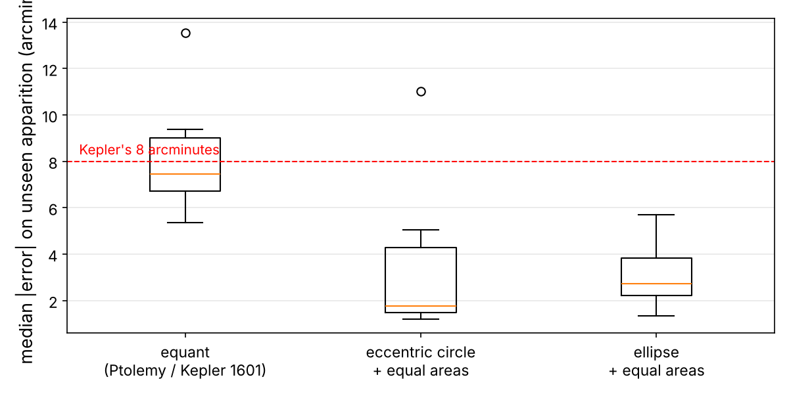
fig, ax = plt.subplots(figsize=(8, 4))
ax.boxplot([cv_scores[k] for k in cv_scores])
ax.set_xticks([1, 2, 3], ["equant\n(Ptolemy / Kepler 1601)",
"eccentric circle\n+ equal areas", "ellipse\n+ equal areas"])
ax.axhline(8, color="r", ls="--", lw=1)
ax.text(0.55, 8.3, "Kepler's 8 arcminutes", color="r")
ax.set_ylabel("median |error| on unseen apparition (arcmin)")
ax.grid(alpha=0.3, axis="y")
save_fig("cross_validation_boxplot")
plt.show()
Now the picture changes. When the models must predict an apparition they have never seen, the equant misses by 8.3 arcminutes on average. That is Kepler's eight arcminutes, recovered from the raw data by a cross-validation loop! On the training set it looked almost as good as the others (1.6′). It had used its freedom to fit the seasons it saw, not the true orbit. This is what overfitting with the wrong model looks like, and it is exactly what Kepler experienced in 1601: his vicarious hypothesis matched the opposition longitudes to 2′, but failed elsewhere.
The eccentric circle with equal areas does much better (3.7′), but one fold blows up to 11′. The ellipse is both the most accurate (3.1′) and the most consistent (standard deviation 1.4′): its errors stay close to Tycho's measurement noise on every unseen apparition. Notice that we did not need to believe Kepler. The model selection procedure, which you would use on any dataset, picked his laws on its own.
You should save every model you experiment with, so you can come back to any of them easily. Make sure you save both the hyperparameters and the trained parameters, as well as the cross-validation scores and perhaps the actual predictions. You can easily save Scikit-Learn models with the joblib library.
Fine-Tune Your Model
Let's assume that you now have a shortlist of promising models, here just one: the ellipse. You now need to fine-tune it.
Grid Search
One option would be to fiddle with the hyperparameters manually, until you find a great combination. This would be very tedious. Instead, use Scikit-Learn's GridSearchCV: tell it which hyperparameters to try and which values, and it evaluates every combination with cross-validation. Our most important hyperparameter is the loss function, that is, how the optimizer treats large residuals. "linear" is ordinary least squares, which minimizes the RMSE and is very sensitive to blunders. "soft_l1" and "cauchy" are robust losses: they behave like squares for small residuals but grow slowly for large ones, so a single misread digit cannot drag the whole solar system. f_scale sets the residual size (in arcminutes) where the transition happens.
from sklearn.model_selection import GridSearchCV
param_grid = [
{"loss": ["linear"]},
{"loss": ["soft_l1", "cauchy"], "f_scale": [1.0, 3.0, 10.0]},
]
ellipse_reg = OrbitRegressor(model="ellipse", init=regs["ellipse"].params_)
grid_search = GridSearchCV(ellipse_reg, param_grid, cv=group_kfold,
scoring=medae_arcmin, return_train_score=True)
grid_search.fit(mars_prepared, mars_labels, groups=groups)
grid_search.best_params_
{'f_scale': 1.0, 'loss': 'soft_l1'}
Grid search found the best combination. Let's look at the score of every combination tested:
cvres = grid_search.cv_results_
for mean_score, params in zip(cvres["mean_test_score"], cvres["params"]):
print(f"{-mean_score:6.3f}'", params)
6.907' {'loss': 'linear'}
2.996' {'f_scale': 1.0, 'loss': 'soft_l1'}
3.983' {'f_scale': 1.0, 'loss': 'cauchy'}
3.124' {'f_scale': 3.0, 'loss': 'soft_l1'}
3.147' {'f_scale': 3.0, 'loss': 'cauchy'}
3.464' {'f_scale': 10.0, 'loss': 'soft_l1'}
3.580' {'f_scale': 10.0, 'loss': 'cauchy'}
Plain least squares is clearly the worst (6.9′): Tycho's blunders pull it away from the truth. The robust losses are all around 3′, and the best is soft_l1 with a transition at 1 arcminute, roughly the size of Tycho's typical error. That makes sense. The grid search refits the best model on the whole training set and keeps it in best_estimator_.
Randomized Search and Ensembles
The grid search approach is fine when you explore relatively few combinations. When the hyperparameter search space is large, it is often preferable to use RandomizedSearchCV, which evaluates a given number of random combinations. In this project, randomness already plays a role inside fit(): the random restarts of the optimizer are a randomized search over starting points, which protects against local minima. Another way to fine-tune is to combine the models that perform best, an ensemble. Astronomers do this too: modern ephemerides average many independent determinations. With a single winning model family, we will stop here.
Analyze the Best Models and Their Errors
You will often gain good insights by inspecting the best models. Here, the model's parameters are the result. They are the orbital elements of Mars and of the Earth, learned from Tycho's numbers alone:
final_model = grid_search.best_estimator_
pd.Series(final_model.params_).round(4)
e_E 0.0191 varpi_E 91.8139 L_E 109.9334 P_E 365.2564 a_M 1.5266 e_M 0.0932 varpi_M 328.8561 L_M 1.2885 P_M 686.9929 i_M 1.8331 node_M 47.8927 obliquity 23.5486 eq_E 0.0340 eq_M 0.1800 dtype: float64
A few of these deserve a moment of awe. \(a_M\) is the size of Mars's orbit in units of the Earth's: 1.527. \(e_M\) is its eccentricity, 0.093. \(P_M\) is its period, 686.99 days. \(i_M\) is the tilt of its orbit, 1.83°, and \(\Omega_M\), the node, is at longitude 47.9°. The obliquity of the ecliptic comes out at 23.55°. Tycho himself measured 23°31.5′ (23.525°). The eq_E and eq_M values are leftovers that only the equant model uses. How precise are they? The Jacobian matrix of the residuals, which least_squares() returns, gives an estimate of the covariance of the parameters:
# Parameter uncertainties from the Jacobian of the residuals (Gauss-Newton covariance)
res = final_model.result_
dof = len(res.fun) - len(res.x)
sigma2 = np.median(np.abs(res.fun)) ** 2 / 0.4549 # robust noise estimate
cov = np.linalg.pinv(res.jac.T @ res.jac) * sigma2
free_names = [p for p in PARAMS if p != "P_E"]
uncert = pd.Series(np.sqrt(np.diag(cov)), index=free_names)
uncert[["a_M", "e_M", "P_M", "i_M", "e_E", "obliquity"]].round(4)
a_M 0.0004 e_M 0.0003 P_M 0.0096 i_M 0.0041 e_E 0.0005 obliquity 0.0066 dtype: float64
Formal uncertainties like these are usually optimistic, because they assume independent errors and a perfect model. The comparison with modern values below is the real test. Next, let's look at the residuals (Figure 1-14):
train_pred = final_model.predict(mars_prepared)
train_err = (mars_labels.values - train_pred) * 60
fig, axes = plt.subplots(1, 2, figsize=(12, 4))
axes[0].hist(train_err[np.abs(train_err) < 15], bins=60)
axes[0].set_xlabel("residual (arcmin)"); axes[0].set_ylabel("count")
axes[1].scatter(mars_prepared.ravel() / 365.25 + 1590, train_err, s=6)
axes[1].set_ylim(-20, 20)
axes[1].set_xlabel("year"); axes[1].set_ylabel("residual (arcmin)")
for ax in axes: ax.grid(alpha=0.3)
save_fig("residuals_plot")
plt.show()
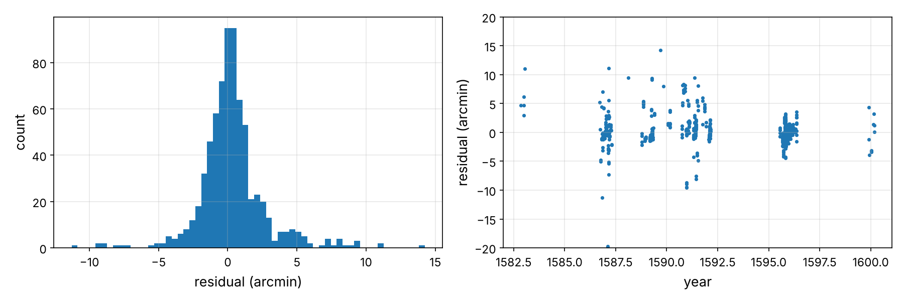
The histogram is a narrow bell, a couple of arcminutes wide, which is Tycho's measurement noise. Against time the residuals are mostly flat, with no obvious systematic wave, which is what a correct model should leave behind. Now let's look at the worst ones:
worst = mars.assign(residual_arcmin=train_err).loc[np.abs(train_err) > 15]
worst = worst.reindex(worst["residual_arcmin"].abs().sort_values(ascending=False).index)
print(len(worst), "observations are off by more than 15 arcmin")
worst[["year", "month", "day", "day_text", "time_text", "residual_arcmin"]].round(1).head(10)
33 observations are off by more than 15 arcmin
| year | month | day | day_text | time_text | residual_arcmin | |
|---|---|---|---|---|---|---|
| 882 | 1596 | 1 | 31 | DIE 31 JANUARIJ. | H.6 M.57 1/3 | -339.2 |
| 881 | 1596 | 1 | 31 | DIE 31 JANUARIJ. | H.6 M.57 1/3 | -338.9 |
| 41 | 1586 | 10 | 10 | DIE 10 OCTOBRIS. | H.6 M.14 | -126.4 |
| 42 | 1586 | 10 | 10 | DIE 10 OCTOBRIS. | H.6 M.14 | -126.3 |
| 96 | 1587 | 2 | 15 | DIE 15 JANUARIJ. (FEB???) | H.15 M.57 | -75.3 |
| 339 | 1591 | 10 | 10 | DIE 10 OCTOBRIS, VESPERI. | H.6 M.26 | 67.1 |
| 95 | 1587 | 2 | 14 | DIE 14 JANUARIJ (FEB???) | H.16 M.45 | -67.0 |
| 94 | 1587 | 2 | 14 | DIE 14 JANUARIJ (FEB???) | H.15 M.52 | -66.5 |
| 340 | 1591 | 10 | 10 | DIE 10 OCTOBRIS, VESPERI. | H.6 M.26 | 66.4 |
| 162 | 1589 | 2 | 12 | DIE 12 FEBRUARIJ, MANE. | H.5 M.19 | -66.2 |
Look at the day_text column: "DIE 14 JANUARIJ (FEB???)". The transcriber himself was unsure whether these observations were from January or February. Our model, which never saw any of these comments, flagged exactly those rows. This is a common and valuable use of a model: finding errors in the data. In a production system you would send these rows back for inspection rather than silently delete them.
Finally, where do the models disagree with each other? Let's predict the sky for every day of 1582–1600 with each model and plot the differences (Figure 1-15):
# Where do the models disagree? Predict the sky for every day of 1582-1600.
t_grid = mars_geo["jd"].values - T0
fig, ax = plt.subplots(figsize=(12, 4))
for name in ["equant", "circle_area"]:
diff = (regs[name].predict(t_grid) - final_model.predict(t_grid)) * 60
ax.plot(t_grid / 365.25 + 1590, diff, label=f"{name} minus ellipse")
ax.set_xlabel("year"); ax.set_ylabel("difference in declination (arcmin)")
ax.grid(alpha=0.3); ax.legend()
save_fig("model_disagreement_plot")
plt.show()
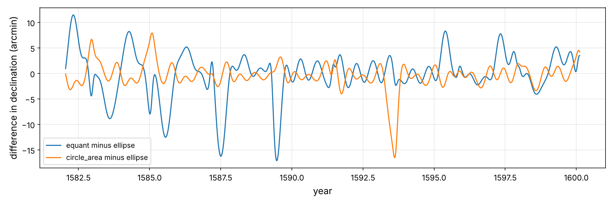
The disagreements are largest around oppositions, when Mars is closest to the Earth and every error in its distance is magnified into an error in direction. Their size is of order 5–10′, the very same eight arcminutes that made Kepler abandon circles.
Evaluate Your System on the Test Set
After tweaking your models for a while, you eventually have a system that performs sufficiently well. Now is the time to evaluate the final model on the test set: two complete apparitions it has never seen. There is nothing special about this process: get the predictors and labels from the test set, run the prep_pipeline to transform the data (call transform(), not fit_transform()), and evaluate:
X_test = test_set.drop("declination", axis=1)
y_test = test_set["declination"].copy()
X_test_prepared = prep_pipeline.transform(X_test)
final_predictions = final_model.predict(X_test_prepared)
final_errors = (final_predictions - y_test.values) * 60
print("test MedAE = %.2f arcmin" % np.median(np.abs(final_errors)))
inliers = np.abs(final_errors) < 15
print("test RMSE (without %d blunders) = %.2f arcmin" % ((~inliers).sum(),
np.sqrt(np.mean(final_errors[inliers] ** 2))))
test MedAE = 7.17 arcmin test RMSE (without 61 blunders) = 6.08 arcmin
A point estimate is not always enough. You may want an idea of how precise it is. Here is a 95% confidence interval for the mean absolute error on the non-blunder test observations, using scipy.stats.t.interval():
from scipy import stats
confidence = 0.95
abs_err = np.abs(final_errors[inliers])
mean = abs_err.mean()
interval = stats.t.interval(confidence, len(abs_err) - 1, loc=mean, scale=stats.sem(abs_err))
print(f"mean |error| = {mean:.2f}' , 95% CI = ({interval[0]:.2f}', {interval[1]:.2f}')")
mean |error| = 4.79' , 95% CI = (4.14', 5.44')
Hmm. The test error is noticeably larger than the cross-validation error. Before you touch anything, find out where it comes from. Is it the data or the model? One way to tell is to ask how well any model could do on these particular observations, by comparing Tycho's test measurements with NASA's sky on the same dates. That is the irreducible error of the data, which no model can beat:
# How well could ANY model do on these observations? Compare Tycho with NASA's sky.
test_jd = X_test_prepared.ravel() + T0
nasa_on_test = np.interp(test_jd, mars_geo["jd"], mars_geo["dec"])
tycho_vs_nasa = (y_test.values - nasa_on_test) * 60
ours_vs_nasa = (final_predictions - nasa_on_test) * 60
print(f"Tycho vs NASA on the test rows (irreducible error): MedAE = {np.median(np.abs(tycho_vs_nasa)):.2f}'")
print(f"Our model vs NASA on the same dates: MedAE = {np.median(np.abs(ours_vs_nasa)):.2f}'")
Tycho vs NASA on the test rows (irreducible error): MedAE = 1.58' Our model vs NASA on the same dates: MedAE = 6.94'
Tycho's own measurements are excellent on these nights (1.6′), but our model is about 7′ away from the true sky. So this time the error belongs to the model. Where is it weakest? Let's plot its error against NASA every day of 1582–1600, as a function of the distance between the Earth and Mars (Figure 1-16):
# Where is the model weakest? Error against NASA vs the Earth-Mars distance, 1582-1600
model_vs_nasa = (final_model.predict(t_grid) - mars_geo["dec"].values) * 60
test_years = sorted(test_set["year"].unique())
print("test set years:", test_years)
fig, ax = plt.subplots(figsize=(9, 4))
ax.scatter(mars_geo["delta"], np.abs(model_vs_nasa), s=2, alpha=0.4)
ax.set_xlabel("Earth–Mars distance (AU)")
ax.set_ylabel("|model − NASA| (arcmin)")
ax.set_yscale("log"); ax.grid(alpha=0.3, which="both")
save_fig("error_vs_distance_plot")
plt.show()
test set years: [np.int64(1584), np.int64(1585), np.int64(1593), np.int64(1594), np.int64(1595)] Saving figure error_vs_distance_plot
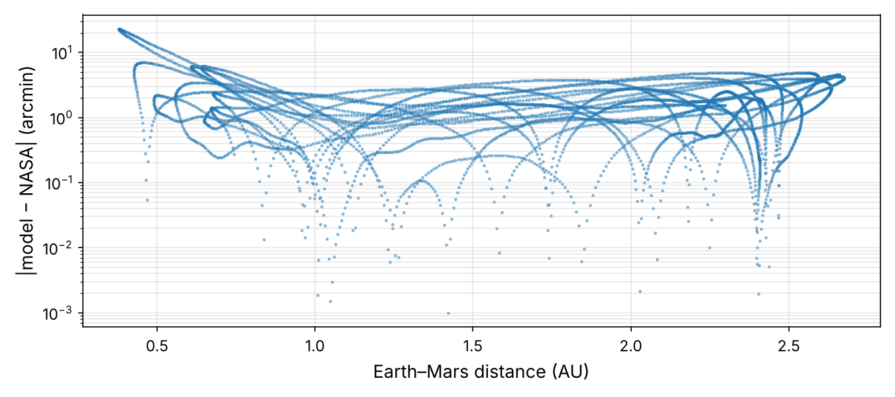
Here is the explanation. One of the two test apparitions is that of 1593, a perihelic opposition: Mars passed opposition near its perihelion, only about 0.4 AU from the Earth. When Mars is that close, any small error in the size or shape of the two orbits is magnified into a large error in direction (an error of 0.003 AU seen from 0.4 AU is 26′). The training set contains no approach that close. On those days the model has to extrapolate to a geometry it never saw, much like a housing-price model asked about a neighborhood unlike any in its training data. This is precisely what a test set is for: it found a weakness that cross-validation on the training apparitions could not reveal.
Resist the temptation to tweak the model until the test numbers look better: such improvements would not generalize, and you would have used up your test set. Instead, write down the limitation. Before you launch, retrain the chosen model on all the data, so that the production model learns from the 1593 close approach too:
from sklearn.base import clone
# Before launch: retrain the chosen model on ALL the data (training + test)
X_full = prep_pipeline.transform(tycho.drop("declination", axis=1))
y_full = tycho["declination"].values
full_model = clone(final_model).set_params(init=final_model.params_)
full_model.fit(X_full, y_full)
d_full = (full_model.predict(t_grid) - mars_geo["dec"].values) * 60
print(f"full model vs NASA, 1582-1600: median |diff| = {np.median(np.abs(d_full)):.2f}', "
f"95% within {np.percentile(np.abs(d_full), 95):.2f}'")
pf = full_model.params_
pd.DataFrame({"trained on 80%": {k: p[k] for k in modern},
"trained on 100%": {k: pf[k] for k in modern},
"modern value": modern}).round(4)
full model vs NASA, 1582-1600: median |diff| = 0.87', 95% within 2.94'
| trained on 80% | trained on 100% | modern value | |
|---|---|---|---|
| a_M | 1.5266 | 1.5244 | 1.5237 |
| e_M | 0.0932 | 0.0938 | 0.0934 |
| P_M | 686.9929 | 686.9603 | 686.9800 |
| i_M | 1.8331 | 1.8437 | 1.8500 |
| e_E | 0.0191 | 0.0157 | 0.0167 |
| obliquity | 23.5486 | 23.5098 | 23.4940 |
With all 940 observations, the orbital elements move even closer to their modern values: the size of Mars's orbit is now right to 0.05%, and the full model matches NASA's sky to 0.9′ on a typical day. Finally, since our goal is to describe the real sky, let's compare the model with NASA's modern ephemeris, every single day from 1582 to 1600, including all the days Tycho never observed. The cell above already did that for the full model. Here is the comparison for the model trained on 80% of the data:
truth = np.interp(mars_geo["jd"].values, mars_geo["jd"].values, mars_geo["dec"].values)
our_sky = final_model.predict(t_grid)
d = (our_sky - truth) * 60
print(f"Our Tycho-trained model vs NASA/JPL, every day 1582-1600: "
f"median |diff| = {np.median(np.abs(d)):.2f}', 95% within {np.percentile(np.abs(d), 95):.2f}'")
p = final_model.params_
modern = {"a_M": 1.5237, "e_M": 0.0934, "P_M": 686.98, "i_M": 1.85, "e_E": 0.0167,
"obliquity": 23.494}
pd.DataFrame({"ours (Tycho data)": {k: p[k] for k in modern}, "modern value": modern}).round(4)
Our Tycho-trained model vs NASA/JPL, every day 1582-1600: median |diff| = 1.54', 95% within 4.80'
| ours (Tycho data) | modern value | |
|---|---|---|
| a_M | 1.5266 | 1.5237 |
| e_M | 0.0932 | 0.0934 |
| P_M | 686.9929 | 686.9800 |
| i_M | 1.8331 | 1.8500 |
| e_E | 0.0191 | 0.0167 |
| obliquity | 23.5486 | 23.4940 |
Trained only on naked-eye measurements from the 16th century, our model reproduces NASA's sky to about 1.5 arcminutes on a typical day, which is finer than the human eye can resolve. Its orbital elements are within a fraction of a percent of the modern values: Mars's eccentricity is right to the third decimal, and its period to within minutes. Not bad for a few dozen lines of Python, and a few thousand cold nights on Hven.
Present Your Solution: the Three Laws
Now comes the project prelaunch phase: you need to present your solution, highlighting what you have learned, what worked and what did not, what assumptions were made, and what your system's limitations are. Here is the summary you would bring to the Emperor:
- Law 1. A generic conic fitted by linear regression to triangulated positions is an ellipse with the Sun at a focus (\(e\) ≈ 0.09). On Tycho's raw data, an elliptical orbit predicts unseen apparitions better than an eccentric circle or an equant.
- Law 2. The area swept per day, \(\tfrac12 r^2\dot\theta\), is constant to 0.3% while the angular speed varies by ±19%. Models that use the area law beat the equant on unseen data.
- Law 3. Across planets, \(T^2/a^3\) is constant. Let's finish the job with a proper regression model.
Fit a linear regression to \(\log T\) against \(\log a\). If \(T = k\,a^n\), then \(\log T = \log k + n \log a\), a straight line:
X_law3 = np.log(harmony[["a_AU"]].values)
y_law3 = np.log(harmony["period_years"].values)
lin_reg = LinearRegression()
lin_reg.fit(X_law3, y_law3)
lin_reg.coef_, lin_reg.intercept_
(array([1.49852041]), np.float64(-0.000318342716054687))
The slope is 1.4985, so \(T \propto a^{1.5}\), and therefore \(T^2 \propto a^3\). Is a straight line really the right model, or would a curve do better? Let's compare polynomial models of increasing degree with leave-one-out cross-validation, which is ideal for tiny datasets:
from sklearn.preprocessing import PolynomialFeatures
from sklearn.model_selection import LeaveOneOut, cross_val_score
for degree in (1, 2, 3):
poly_reg = Pipeline([("poly", PolynomialFeatures(degree, include_bias=False)),
("lin", LinearRegression())])
scores = cross_val_score(poly_reg, X_law3, y_law3, cv=LeaveOneOut(),
scoring="neg_mean_squared_error")
print(f"degree {degree}: LOO RMSE in log T = {np.sqrt(-scores.mean()):.4f}")
degree 1: LOO RMSE in log T = 0.0045 degree 2: LOO RMSE in log T = 0.0054 degree 3: LOO RMSE in log T = 0.0063
The straight line generalizes best. Higher degrees only add variance: a textbook case of Occam's razor, checked with cross-validation. Now the moment of truth: does Mars, as measured from Tycho's data by our model, sit on the line? And does the law hold around other centers of attraction, like Jupiter (Figure 1-17)?
moons_a_AU = moons["a_thousand_km"] * 1e3 / AU_KM
moons_T = moons["period_days"] / 365.25
a_grid = np.logspace(-0.5, 1.8, 50)
fig, ax = plt.subplots(figsize=(8, 5.5))
ax.loglog(harmony["a_AU"], harmony["period_years"], "bo", label="planets (NASA)")
ax.loglog(a_grid, np.exp(lin_reg.predict(np.log(a_grid).reshape(-1, 1))), "b-",
label=f"fit: T ∝ a^{lin_reg.coef_[0]:.4f}")
ax.loglog(pf["a_M"], pf["P_M"] / 365.2564, "r*", ms=16,
label="Mars, from Tycho's data (our model)")
ax.loglog(moons_a_AU, moons_T, "gs", label="Galilean moons (NASA)")
m_reg = LinearRegression().fit(np.log(moons_a_AU.values).reshape(-1, 1), np.log(moons_T))
ax.loglog(a_grid / 100, np.exp(m_reg.predict(np.log(a_grid / 100).reshape(-1, 1))),
"g--", label=f"moons fit: T ∝ a^{m_reg.coef_[0]:.4f}")
ax.set_xlabel("semi-major axis a (AU)"); ax.set_ylabel("period T (years)")
ax.grid(alpha=0.3, which="both"); ax.legend(fontsize=9)
save_fig("third_law_fit_plot")
plt.show()
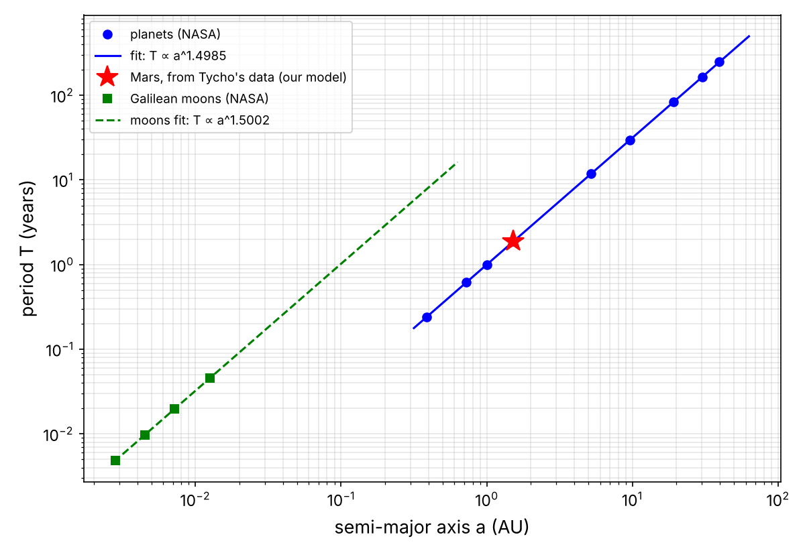
The red star falls right on the line. Jupiter's moons follow the same 3/2 law, but on a different line. In 1687 Newton explained why: the third law is really \(T^2 = \tfrac{4\pi^2}{GM}a^3\), so the intercept of the line measures the mass \(M\) of the central body. Comparing the two intercepts therefore weighs Jupiter against the Sun:
# Kepler III with Newton: T² = 4π² a³ / (G M). Fix the slope at 3/2 and the
# intercept measures the central mass: c = mean(log T - 1.5 log a) = -½ log(GM/4π²)
c_sun = np.mean(np.log(harmony["period_years"]) - 1.5 * np.log(harmony["a_AU"]))
c_jup = np.mean(np.log(moons_T) - 1.5 * np.log(moons_a_AU))
print(f"M_Jupiter / M_Sun = {np.exp(2 * (c_sun - c_jup)):.6f} (NASA: 0.000955)")
M_Jupiter / M_Sun = 0.000950 (NASA: 0.000955)
Kepler's third law, a linear regression, and four moons Galileo discovered with a toy telescope tell us that Jupiter has about 1/1,050 of the mass of the Sun. Keep this trick in mind: in the next chapter we will use it to weigh the black hole at the center of our galaxy.
Launch, Monitor, and Maintain Your System
Perfect, you got approval to launch! The Rudolphine Tables are printed in 1627, and they are about 30 times more accurate than anything before them. In 1631 they correctly predict a transit of Mercury across the Sun. Pierre Gassendi watches it happen in Paris, the first person ever to observe one.
But you also need to write monitoring code to check your system's live performance at regular intervals and trigger alerts when it drops. Models tend to "rot" as the world changes. Let's monitor ours for four centuries, by comparing the predictions of the full model with NASA's ephemeris from 1600 to 2030 (Figure 1-18):
# Fetch NASA's Mars for 1600-2030 (one point every 30 days) and compare.
mars_modern = fetch_horizons("4", "1600-03-01", "2030-01-01", "30d", "2",
"horizons_mars_geocentric_1600_2030.csv")
mars_modern.columns = ["jd", "ra", "dec"]
t_future = mars_modern["jd"].values - T0
drift = (full_model.predict(t_future) - mars_modern["dec"].values) * 60
years = t_future / 365.25 + 1590
fig, ax = plt.subplots(figsize=(12, 4))
ax.plot(years, np.abs(drift), ".", ms=3)
ax.set_yscale("log")
ax.set_xlabel("year"); ax.set_ylabel("|our prediction − NASA| (arcmin)")
ax.grid(alpha=0.3, which="both")
save_fig("model_drift_plot")
plt.show()
for y0 in (1600, 1650, 1700, 1800, 1900, 2000, 2025):
sel = (years > y0) & (years < y0 + 5)
print(y0, f"median |error| = {np.median(np.abs(drift[sel])):7.1f} arcmin")
Saving figure model_drift_plot 1600 median |error| = 0.5 arcmin 1650 median |error| = 3.5 arcmin 1700 median |error| = 7.6 arcmin 1800 median |error| = 11.8 arcmin 1900 median |error| = 21.5 arcmin 2000 median |error| = 24.0 arcmin 2025 median |error| = 28.4 arcmin
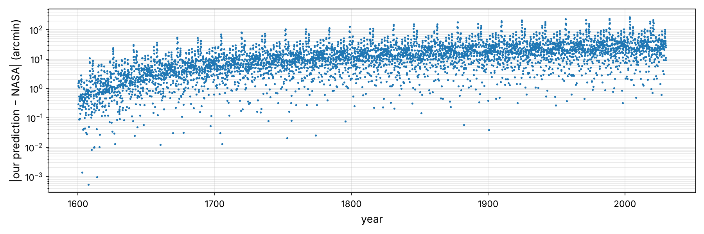
The error grows steadily, from under one arcminute in Tycho's time to about half a degree today, the width of the full Moon. Why? Two reasons. First, the period of Mars is uncertain by a hundredth of a day or so, and small rate errors grow linearly with time; that is the price of an 18-year training set. Second, and more profoundly, Kepler's laws are not exactly true. Jupiter and the other planets slowly pull on Mars, making its perihelion and node drift (a few arcseconds per year). Kepler's laws are what Newton's gravity becomes when you ignore everything but the Sun.
In ML terms, the world has a slow concept drift, and the cure is the usual one: collect fresh data and retrain the model regularly. That is what astronomers have done ever since. NASA's current ephemeris is fitted to radar, laser and spacecraft data, and its models include the gravity of every planet, hundreds of asteroids, and general relativity. And in the third chapter of this series, a drift exactly like this one, in the motion of Uranus, will lead us to a planet nobody had ever seen.
Try It Out!
Hopefully this chapter gave you a good idea of what an end-to-end ML project looks like, and showed you some of the tools you can use. Much of the work was in the data preparation step: reading Latin, fixing calendars, finding blunders. Building the models came last, and model selection was decided by careful cross-validation, not by the training error.
The animation below runs on the exact equations and parameters of this chapter: Kepler's equation solved by Newton's method, the ellipse fitted to Tycho, and the third-law slope fitted to NASA's planets. Use it in class. Make the ellipse very eccentric and watch the equal-area slices, trace an orbit with Kepler's triangulation, and see the model's curve thread through Tycho's raw dots. You can also open it full-screen: animations/kepler_laws_animation.html.
Exercises
Using this chapter's datasets:
- Add a fifth model: an ellipse whose planet moves uniformly as seen from the empty focus (an "equant on an ellipse"). How close does it come to Kepler's ellipse in cross-validation? Why did this approximation work so well for 1,400 years? (Hint: compare the error to \(e^2\).)
- Replace
GridSearchCVwithRandomizedSearchCVand also search over theTychoTimeConverterhyperparameters (the imputed hours, and the date of the calendar switch). Can the data tell you when Tycho changed calendars? - Investigate the cross-validation folds with the largest errors. Which apparitions are they? Plot the residuals of those folds. Are they caused by the model, the hours, or the data?
- Model the refraction. Near the horizon the atmosphere bends light upward by several arcminutes, and Tycho's correction for planets was imperfect: plot Tycho − NASA against the altitude of Mars at Hven (latitude 55.9°N) and look at the low-altitude points. The standard formula is \(R \approx 1.02′ / \tan(h + 10.3°/(h + 5.11°))\) for an altitude \(h\) in degrees. Add a parameter
kthat scales \(R\) (Tycho corrected part of it, so \(0 < k < 1\)), compute the altitude of Mars at the time of each observation from the predicted right ascension and the local sidereal time, and refit. Does the test error drop? - Try fitting the obliquity with a fixed value of 23.525° (Tycho's own value). Does the cross-validation error change? What does that tell you about the uncertainty of each parameter?
- Download NASA/JPL Horizons data for Venus (target
'2') and repeat the triangulation. Venus has a sidereal period of 224.7 days and an almost circular orbit. Can the conic fit tell its eccentricity (0.007) from zero? - Extend the Law 3 regression with dwarf planets and asteroids (Ceres, Vesta, Eris) and with the moons of Saturn (from the NASA Saturnian satellite fact sheet), and estimate the mass of Saturn relative to the Sun.
- Write a function that, given a date, returns the predicted right ascension and declination of Mars with our model, and compare it with Horizons for tonight. How far off is the 1600 model today?
Solutions are in the notebook's spirit: write the code, look at the data, and trust the cross-validation.
1 The story is historical, but the job is not: the actual assistant was Johannes Kepler (1571–1630), who joined Tycho in 1600 and inherited his data in 1601. Astronomia Nova (1609) contains Laws 1 and 2. Harmonices Mundi (1619) contains Law 3.
2 Strictly speaking, pre-telescopic: Tycho used giant quadrants, sextants and armillary spheres, with sights instead of lenses. The telescope was first pointed at the sky in 1609. The data come from Tychonis Brahe Dani Opera Omnia, ed. J. L. E. Dreyer (1913–1929), volumes 10–13, transcribed by Wayne Pafko (2000) and re-published by Christophe Yamahata (2026).
3 Kepler found the area law before the ellipse, and partly for physical reasons: he believed a force from the Sun pushed the planets, weaker with distance. Newton later showed that the area law holds for any central force. It is the conservation of angular momentum.
Data credits. Tycho Brahe's observations: Opera Omnia via W. Pafko and C. Yamahata. Ephemerides: NASA/JPL Horizons (DE440/441). Planetary data: NASA NSSDC fact sheets (D. R. Williams).